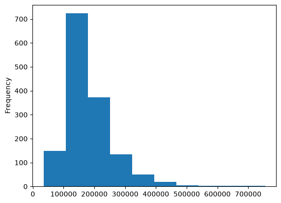
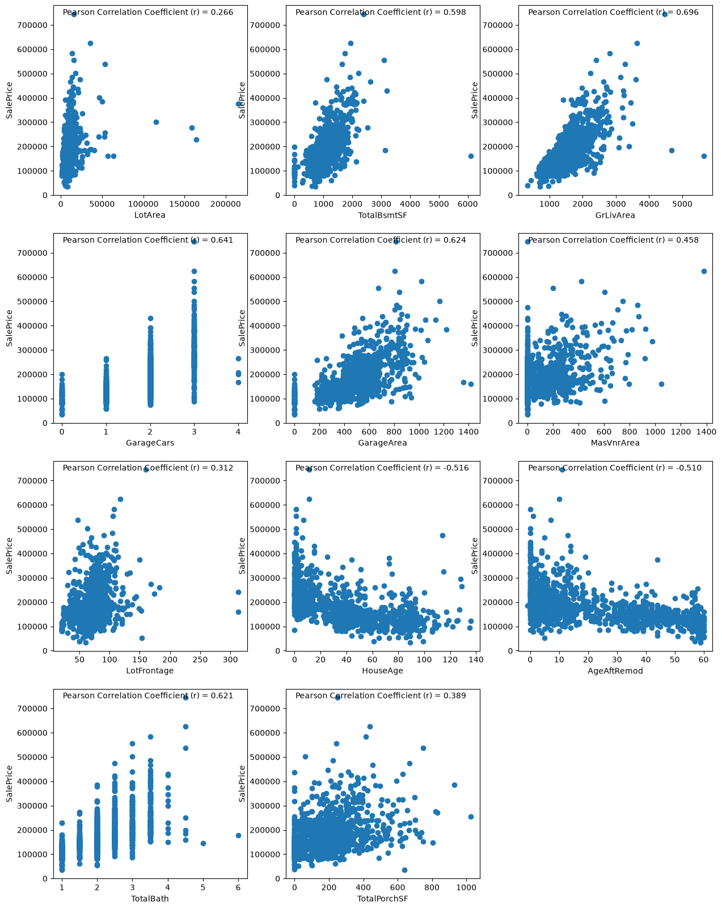
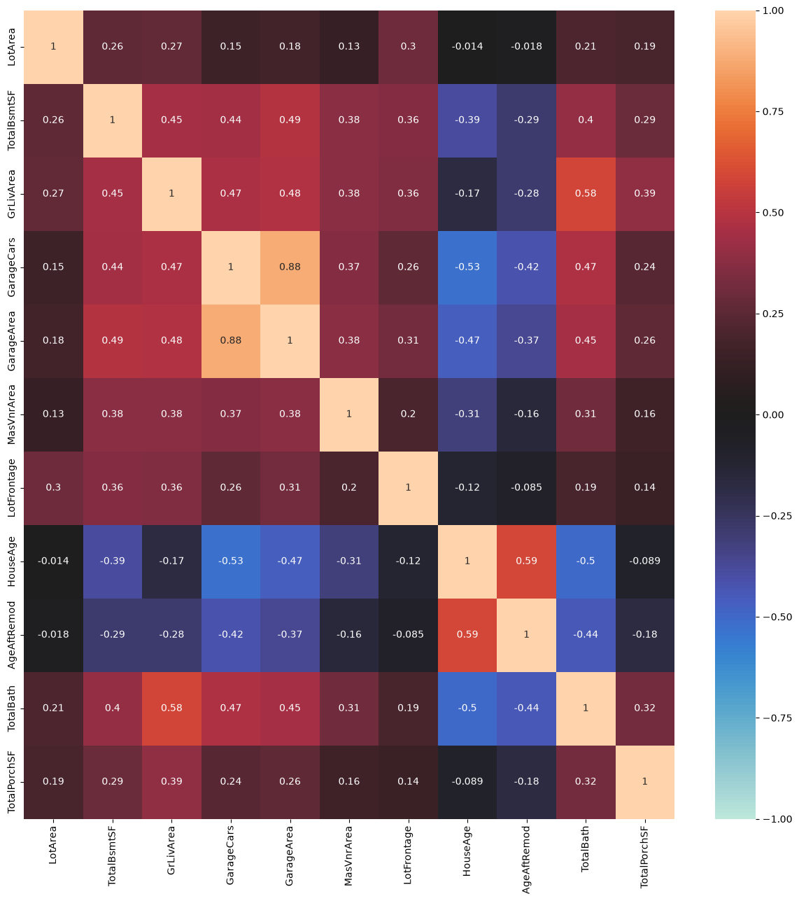
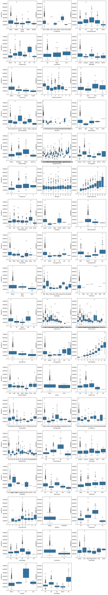
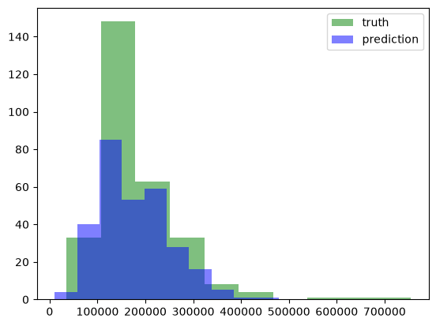

%pip install --upgrade -q matplotlib numpy pandas scikit-learn scipy seabornHouse Price Prediction
Machine Learning
Regression
Overview
This notebook investigates the use of machine learning model, namely linear regression, to predict house price using the following dataset.
The analysis covers these main steps:
- Data preprocessing and Exploratory Data Analysis (EDA)
- Statistical analysis for feature selection
- Model training
- Model evaluation
The primary objective is to understand how to perform end-to-end machine learning process.
Install and Import Packages
import matplotlib.pyplot as plt
import numpy as np
import pandas as pd
import seaborn as snsLoad Dataset
df = pd.read_csv('data/house_price.csv')
df.head()| Id | MSSubClass | MSZoning | LotFrontage | LotArea | Street | Alley | LotShape | LandContour | Utilities | ... | PoolArea | PoolQC | Fence | MiscFeature | MiscVal | MoSold | YrSold | SaleType | SaleCondition | SalePrice | |
|---|---|---|---|---|---|---|---|---|---|---|---|---|---|---|---|---|---|---|---|---|---|
| 0 | 1 | 60 | RL | 65.0 | 8450 | Pave | NaN | Reg | Lvl | AllPub | ... | 0 | NaN | NaN | NaN | 0 | 2 | 2008 | WD | Normal | 208500 |
| 1 | 2 | 20 | RL | 80.0 | 9600 | Pave | NaN | Reg | Lvl | AllPub | ... | 0 | NaN | NaN | NaN | 0 | 5 | 2007 | WD | Normal | 181500 |
| 2 | 3 | 60 | RL | 68.0 | 11250 | Pave | NaN | IR1 | Lvl | AllPub | ... | 0 | NaN | NaN | NaN | 0 | 9 | 2008 | WD | Normal | 223500 |
| 3 | 4 | 70 | RL | 60.0 | 9550 | Pave | NaN | IR1 | Lvl | AllPub | ... | 0 | NaN | NaN | NaN | 0 | 2 | 2006 | WD | Abnorml | 140000 |
| 4 | 5 | 60 | RL | 84.0 | 14260 | Pave | NaN | IR1 | Lvl | AllPub | ... | 0 | NaN | NaN | NaN | 0 | 12 | 2008 | WD | Normal | 250000 |
5 rows × 81 columns
Data Preprocessing and EDA
Data Preprocessing Phase 1
First, let’s take a look at the dataset overview.
df.info()<class 'pandas.DataFrame'>
RangeIndex: 1460 entries, 0 to 1459
Data columns (total 81 columns):
# Column Non-Null Count Dtype
--- ------ -------------- -----
0 Id 1460 non-null int64
1 MSSubClass 1460 non-null int64
2 MSZoning 1460 non-null str
3 LotFrontage 1201 non-null float64
4 LotArea 1460 non-null int64
5 Street 1460 non-null str
6 Alley 91 non-null str
7 LotShape 1460 non-null str
8 LandContour 1460 non-null str
9 Utilities 1460 non-null str
10 LotConfig 1460 non-null str
11 LandSlope 1460 non-null str
12 Neighborhood 1460 non-null str
13 Condition1 1460 non-null str
14 Condition2 1460 non-null str
15 BldgType 1460 non-null str
16 HouseStyle 1460 non-null str
17 OverallQual 1460 non-null int64
18 OverallCond 1460 non-null int64
19 YearBuilt 1460 non-null int64
20 YearRemodAdd 1460 non-null int64
21 RoofStyle 1460 non-null str
22 RoofMatl 1460 non-null str
23 Exterior1st 1460 non-null str
24 Exterior2nd 1460 non-null str
25 MasVnrType 588 non-null str
26 MasVnrArea 1452 non-null float64
27 ExterQual 1460 non-null str
28 ExterCond 1460 non-null str
29 Foundation 1460 non-null str
30 BsmtQual 1423 non-null str
31 BsmtCond 1423 non-null str
32 BsmtExposure 1422 non-null str
33 BsmtFinType1 1423 non-null str
34 BsmtFinSF1 1460 non-null int64
35 BsmtFinType2 1422 non-null str
36 BsmtFinSF2 1460 non-null int64
37 BsmtUnfSF 1460 non-null int64
38 TotalBsmtSF 1460 non-null int64
39 Heating 1460 non-null str
40 HeatingQC 1460 non-null str
41 CentralAir 1460 non-null str
42 Electrical 1459 non-null str
43 1stFlrSF 1460 non-null int64
44 2ndFlrSF 1460 non-null int64
45 LowQualFinSF 1460 non-null int64
46 GrLivArea 1460 non-null int64
47 BsmtFullBath 1460 non-null int64
48 BsmtHalfBath 1460 non-null int64
49 FullBath 1460 non-null int64
50 HalfBath 1460 non-null int64
51 BedroomAbvGr 1460 non-null int64
52 KitchenAbvGr 1460 non-null int64
53 KitchenQual 1460 non-null str
54 TotRmsAbvGrd 1460 non-null int64
55 Functional 1460 non-null str
56 Fireplaces 1460 non-null int64
57 FireplaceQu 770 non-null str
58 GarageType 1379 non-null str
59 GarageYrBlt 1379 non-null float64
60 GarageFinish 1379 non-null str
61 GarageCars 1460 non-null int64
62 GarageArea 1460 non-null int64
63 GarageQual 1379 non-null str
64 GarageCond 1379 non-null str
65 PavedDrive 1460 non-null str
66 WoodDeckSF 1460 non-null int64
67 OpenPorchSF 1460 non-null int64
68 EnclosedPorch 1460 non-null int64
69 3SsnPorch 1460 non-null int64
70 ScreenPorch 1460 non-null int64
71 PoolArea 1460 non-null int64
72 PoolQC 7 non-null str
73 Fence 281 non-null str
74 MiscFeature 54 non-null str
75 MiscVal 1460 non-null int64
76 MoSold 1460 non-null int64
77 YrSold 1460 non-null int64
78 SaleType 1460 non-null str
79 SaleCondition 1460 non-null str
80 SalePrice 1460 non-null int64
dtypes: float64(3), int64(35), str(43)
memory usage: 924.0 KBBased on the output above, here are some informations about the dataset. - The dataset has 1460 rows and 81 columns. - The target variable is ‘SalePrice’. - The features consist of both numerical and categorical features. - Notice that there are some features with missing values.
Let’s also see the distribution of the target variable (SalePrice).
df['SalePrice'].plot(kind='hist')
Dropping Unnecessary Columns
# drop column 'Id' because it is same as an index
try:
df = df.drop(columns=['Id'])
print('Successfully Removed Column Id.')
except KeyError:
print('Column Id Not Found or Has Been Removed.')Successfully Removed Column Id.Checking dan Dropping Duplicated Rows
# check and drop duplicated rows (if exist)
total_duplicates = df.duplicated().sum()
print(f'Total duplicated rows: {total_duplicates}')
if total_duplicates:
df = df.drop_duplicates()
print('All duplicated rows has been removed.')
else:
print('No duplicated rows need to be dropped.')Total duplicated rows: 0
No duplicated rows need to be dropped.Now, let’s focus on identifying which features have missing values and each missing values counts.
Checking Missing Values
check_missing_values_series = df.isna().sum().sort_values()
missing_values_series = check_missing_values_series[check_missing_values_series > 0]
missing_values_columns = missing_values_series.index.tolist()
missing_dtypes = [str(df[column].dtypes) for column in missing_values_columns]
missing_dtypes_series = pd.Series(data=missing_dtypes, index=missing_values_columns)
missing_unique = [df[column].unique().tolist() for column in missing_values_columns]
missing_unique_series = pd.Series(data=missing_unique, index=missing_values_columns)
missing_values_df = pd.concat([missing_values_series, missing_dtypes_series, missing_unique_series], axis=1)
missing_values_df = missing_values_df.rename(columns={0: 'Missing Values Counts', 1: 'Dtype', 2: 'Unique Values'})
print(missing_values_df)
print()
print(f'Total Columns with Missing Values: {len(missing_values_df)}') Missing Values Counts Dtype \
Electrical 1 str
MasVnrArea 8 float64
BsmtFinType1 37 str
BsmtCond 37 str
BsmtQual 37 str
BsmtFinType2 38 str
BsmtExposure 38 str
GarageType 81 str
GarageCond 81 str
GarageFinish 81 str
GarageQual 81 str
GarageYrBlt 81 float64
LotFrontage 259 float64
FireplaceQu 690 str
MasVnrType 872 str
Fence 1179 str
Alley 1369 str
MiscFeature 1406 str
PoolQC 1453 str
Unique Values
Electrical [SBrkr, FuseF, FuseA, FuseP, Mix, nan]
MasVnrArea [196.0, 0.0, 162.0, 350.0, 186.0, 240.0, 286.0...
BsmtFinType1 [GLQ, ALQ, Unf, Rec, BLQ, nan, LwQ]
BsmtCond [TA, Gd, nan, Fa, Po]
BsmtQual [Gd, TA, Ex, nan, Fa]
BsmtFinType2 [Unf, BLQ, nan, ALQ, Rec, LwQ, GLQ]
BsmtExposure [No, Gd, Mn, Av, nan]
GarageType [Attchd, Detchd, BuiltIn, CarPort, nan, Basmen...
GarageCond [TA, Fa, nan, Gd, Po, Ex]
GarageFinish [RFn, Unf, Fin, nan]
GarageQual [TA, Fa, Gd, nan, Ex, Po]
GarageYrBlt [2003.0, 1976.0, 2001.0, 1998.0, 2000.0, 1993....
LotFrontage [65.0, 80.0, 68.0, 60.0, 84.0, 85.0, 75.0, nan...
FireplaceQu [nan, TA, Gd, Fa, Ex, Po]
MasVnrType [BrkFace, nan, Stone, BrkCmn]
Fence [nan, MnPrv, GdWo, GdPrv, MnWw]
Alley [nan, Grvl, Pave]
MiscFeature [nan, Shed, Gar2, Othr, TenC]
PoolQC [nan, Ex, Fa, Gd]
Total Columns with Missing Values: 19Based on the output above, there are 19 columns with missing values.
Here are the strategies for handling those missing values.
Drop the GarageYrBlt column. From a logical and temporal standpoint, the construction year of a garage functions as a close linear approximation of the primary structure’s construction year (YearBuilt), as residential garages are typically built concurrently with the main house. Imputing the missing values (which mathematically represent the absence of a garage) with a continuous year would introduce noise. Therefore, treating GarageYrBlt as a redundant temporal proxy and dropping it is a mathematically sound decision, as the variance of the property’s age is already rigorously accounted for by YearBuilt.
Impute the numerical features (MasVnrArea, LotFrontage) using the median to mitigate the influence of extreme values.
Impute the categorical features using a constant value (‘None’) since the missing values systematically represent the absence of a specific house facility (e.g., no fence, no alley), making ‘None’ a structurally meaningful category.
The only exception is the Electrical feature, where the single missing value is imputed using the mode (most frequent value), assuming the missing entry is a data entry omission rather than the complete absence of an electrical system.
Handling Missing Values
Train-Test Split
Before handling the missing values, split the the data into train and test set. Here, we are using 80:20 ratio for the train and test set.
We must split our data first, to avoid data leakage
from sklearn.model_selection import train_test_split
# drop GarageYrBlt
try:
df = df.drop(columns=['GarageYrBlt'])
try:
missing_values_columns.remove('GarageYrBlt')
except:
pass
print('Successfully Removed Column GarageYrBlt.')
except KeyError:
print('Column GarageYrBlt Not Found or Has Been Removed.')
# separate the target variable
target = 'SalePrice'
y = df[target].values
X_df = df.drop(columns=[target])
# split the data into train and test set
X_train_df, X_test_df, y_train, y_test = train_test_split(X_df, y, test_size=0.2, random_state=42)
print(f'X_train_df shape: {X_train_df.shape}')
print(f'X_test_df shape: {X_test_df.shape}')
print(f'y_train shape: {y_train.shape}')
print(f'y_test shape: {y_test.shape}')Successfully Removed Column GarageYrBlt.
X_train_df shape: (1168, 78)
X_test_df shape: (292, 78)
y_train shape: (1168,)
y_test shape: (292,)Divide the data into the column without missing values, column with numerical missing values, column with categorical missing values, and column with special treatment categorical missing values.
missing_num_columns = ['MasVnrArea', 'LotFrontage']
missing_special_cat_columns = ['Electrical']
missing_cat_columns = set(missing_values_columns.copy())
remove_from_missing_cat = set(missing_num_columns + missing_special_cat_columns)
missing_cat_columns = list(missing_cat_columns - remove_from_missing_cat)
not_missing_columns = df.drop(columns=missing_values_columns+[target]).columns.tolist()
X_train_not_missing = X_train_df[not_missing_columns].values
X_test_not_missing = X_test_df[not_missing_columns].values
X_train_missing_num = X_train_df[missing_num_columns].values
X_test_missing_num = X_test_df[missing_num_columns].values
X_train_missing_cat = X_train_df[missing_cat_columns].values
X_test_missing_cat = X_test_df[missing_cat_columns].values
X_train_missing_special_cat = X_train_df[missing_special_cat_columns].values
X_test_missing_special_cat = X_test_df[missing_special_cat_columns].values
print(f'X_train_not_missing shape: {X_train_not_missing.shape}')
print(f'X_test_not_missing shape: {X_test_not_missing.shape}')
print(f'X_train_missing_num shape: {X_train_missing_num.shape}')
print(f'X_test_missing_num shape: {X_test_missing_num.shape}')
print(f'X_train_missing_cat shape: {X_train_missing_cat.shape}')
print(f'X_test_missing_cat shape: {X_test_missing_cat.shape}')
print(f'X_train_missing_special_cat shape: {X_train_missing_special_cat.shape}')
print(f'X_test_missing_special_cat shape: {X_test_missing_special_cat.shape}')X_train_not_missing shape: (1168, 60)
X_test_not_missing shape: (292, 60)
X_train_missing_num shape: (1168, 2)
X_test_missing_num shape: (292, 2)
X_train_missing_cat shape: (1168, 15)
X_test_missing_cat shape: (292, 15)
X_train_missing_special_cat shape: (1168, 1)
X_test_missing_special_cat shape: (292, 1)Using SimpleImputer
Then, we can do the imputation using SimpleImputer from the scikit-learn.
from sklearn.impute import SimpleImputer
# create each imputer instance
num_imputer = SimpleImputer(strategy='median')
cat_imputer = SimpleImputer(strategy='constant', fill_value='None')
special_cat_imputer = SimpleImputer(strategy='most_frequent')
# fit-transform to the missing train set and only transform to the missing test set to avoid data leakage
X_train_imputed_num = num_imputer.fit_transform(X_train_missing_num)
X_test_imputed_num = num_imputer.transform(X_test_missing_num)
X_train_imputed_cat = cat_imputer.fit_transform(X_train_missing_cat)
X_test_imputed_cat = cat_imputer.transform(X_test_missing_cat)
X_train_imputed_special_cat = special_cat_imputer.fit_transform(X_train_missing_special_cat)
X_test_imputed_special_cat = special_cat_imputer.transform(X_test_missing_special_cat)
# concatenate all train and test set
X_train_imputed = np.concatenate((X_train_not_missing, X_train_imputed_num, X_train_imputed_cat, X_train_imputed_special_cat), axis=1)
X_test_imputed = np.concatenate((X_test_not_missing, X_test_imputed_num, X_test_imputed_cat, X_test_imputed_special_cat), axis=1)
print(f'X_train_imputed shape: {X_train_imputed.shape}')
print(f'X_test_imputed shape: {X_test_imputed.shape}')X_train_imputed shape: (1168, 78)
X_test_imputed shape: (292, 78)# convert X_train_imputed and X_test_imputed to DataFrame
current_all_columns = not_missing_columns + missing_num_columns + missing_cat_columns + missing_special_cat_columns
X_train_imputed_df = pd.DataFrame(data=X_train_imputed, columns=current_all_columns)
X_test_imputed_df = pd.DataFrame(data=X_test_imputed, columns=current_all_columns)X_train_imputed_df.info()<class 'pandas.DataFrame'>
RangeIndex: 1168 entries, 0 to 1167
Data columns (total 78 columns):
# Column Non-Null Count Dtype
--- ------ -------------- -----
0 MSSubClass 1168 non-null object
1 MSZoning 1168 non-null str
2 LotArea 1168 non-null object
3 Street 1168 non-null str
4 LotShape 1168 non-null str
5 LandContour 1168 non-null str
6 Utilities 1168 non-null str
7 LotConfig 1168 non-null str
8 LandSlope 1168 non-null str
9 Neighborhood 1168 non-null str
10 Condition1 1168 non-null str
11 Condition2 1168 non-null str
12 BldgType 1168 non-null str
13 HouseStyle 1168 non-null str
14 OverallQual 1168 non-null object
15 OverallCond 1168 non-null object
16 YearBuilt 1168 non-null object
17 YearRemodAdd 1168 non-null object
18 RoofStyle 1168 non-null str
19 RoofMatl 1168 non-null str
20 Exterior1st 1168 non-null str
21 Exterior2nd 1168 non-null str
22 ExterQual 1168 non-null str
23 ExterCond 1168 non-null str
24 Foundation 1168 non-null str
25 BsmtFinSF1 1168 non-null object
26 BsmtFinSF2 1168 non-null object
27 BsmtUnfSF 1168 non-null object
28 TotalBsmtSF 1168 non-null object
29 Heating 1168 non-null str
30 HeatingQC 1168 non-null str
31 CentralAir 1168 non-null str
32 1stFlrSF 1168 non-null object
33 2ndFlrSF 1168 non-null object
34 LowQualFinSF 1168 non-null object
35 GrLivArea 1168 non-null object
36 BsmtFullBath 1168 non-null object
37 BsmtHalfBath 1168 non-null object
38 FullBath 1168 non-null object
39 HalfBath 1168 non-null object
40 BedroomAbvGr 1168 non-null object
41 KitchenAbvGr 1168 non-null object
42 KitchenQual 1168 non-null str
43 TotRmsAbvGrd 1168 non-null object
44 Functional 1168 non-null str
45 Fireplaces 1168 non-null object
46 GarageCars 1168 non-null object
47 GarageArea 1168 non-null object
48 PavedDrive 1168 non-null str
49 WoodDeckSF 1168 non-null object
50 OpenPorchSF 1168 non-null object
51 EnclosedPorch 1168 non-null object
52 3SsnPorch 1168 non-null object
53 ScreenPorch 1168 non-null object
54 PoolArea 1168 non-null object
55 MiscVal 1168 non-null object
56 MoSold 1168 non-null object
57 YrSold 1168 non-null object
58 SaleType 1168 non-null str
59 SaleCondition 1168 non-null str
60 MasVnrArea 1168 non-null object
61 LotFrontage 1168 non-null object
62 BsmtCond 1168 non-null str
63 MasVnrType 1168 non-null str
64 GarageType 1168 non-null str
65 GarageQual 1168 non-null str
66 Fence 1168 non-null str
67 BsmtFinType1 1168 non-null str
68 BsmtExposure 1168 non-null str
69 FireplaceQu 1168 non-null str
70 GarageCond 1168 non-null str
71 GarageFinish 1168 non-null str
72 Alley 1168 non-null str
73 BsmtFinType2 1168 non-null str
74 BsmtQual 1168 non-null str
75 PoolQC 1168 non-null str
76 MiscFeature 1168 non-null str
77 Electrical 1168 non-null str
dtypes: object(35), str(43)
memory usage: 711.9+ KBX_test_imputed_df.info()<class 'pandas.DataFrame'>
RangeIndex: 292 entries, 0 to 291
Data columns (total 78 columns):
# Column Non-Null Count Dtype
--- ------ -------------- -----
0 MSSubClass 292 non-null object
1 MSZoning 292 non-null str
2 LotArea 292 non-null object
3 Street 292 non-null str
4 LotShape 292 non-null str
5 LandContour 292 non-null str
6 Utilities 292 non-null str
7 LotConfig 292 non-null str
8 LandSlope 292 non-null str
9 Neighborhood 292 non-null str
10 Condition1 292 non-null str
11 Condition2 292 non-null str
12 BldgType 292 non-null str
13 HouseStyle 292 non-null str
14 OverallQual 292 non-null object
15 OverallCond 292 non-null object
16 YearBuilt 292 non-null object
17 YearRemodAdd 292 non-null object
18 RoofStyle 292 non-null str
19 RoofMatl 292 non-null str
20 Exterior1st 292 non-null str
21 Exterior2nd 292 non-null str
22 ExterQual 292 non-null str
23 ExterCond 292 non-null str
24 Foundation 292 non-null str
25 BsmtFinSF1 292 non-null object
26 BsmtFinSF2 292 non-null object
27 BsmtUnfSF 292 non-null object
28 TotalBsmtSF 292 non-null object
29 Heating 292 non-null str
30 HeatingQC 292 non-null str
31 CentralAir 292 non-null str
32 1stFlrSF 292 non-null object
33 2ndFlrSF 292 non-null object
34 LowQualFinSF 292 non-null object
35 GrLivArea 292 non-null object
36 BsmtFullBath 292 non-null object
37 BsmtHalfBath 292 non-null object
38 FullBath 292 non-null object
39 HalfBath 292 non-null object
40 BedroomAbvGr 292 non-null object
41 KitchenAbvGr 292 non-null object
42 KitchenQual 292 non-null str
43 TotRmsAbvGrd 292 non-null object
44 Functional 292 non-null str
45 Fireplaces 292 non-null object
46 GarageCars 292 non-null object
47 GarageArea 292 non-null object
48 PavedDrive 292 non-null str
49 WoodDeckSF 292 non-null object
50 OpenPorchSF 292 non-null object
51 EnclosedPorch 292 non-null object
52 3SsnPorch 292 non-null object
53 ScreenPorch 292 non-null object
54 PoolArea 292 non-null object
55 MiscVal 292 non-null object
56 MoSold 292 non-null object
57 YrSold 292 non-null object
58 SaleType 292 non-null str
59 SaleCondition 292 non-null str
60 MasVnrArea 292 non-null object
61 LotFrontage 292 non-null object
62 BsmtCond 292 non-null str
63 MasVnrType 292 non-null str
64 GarageType 292 non-null str
65 GarageQual 292 non-null str
66 Fence 292 non-null str
67 BsmtFinType1 292 non-null str
68 BsmtExposure 292 non-null str
69 FireplaceQu 292 non-null str
70 GarageCond 292 non-null str
71 GarageFinish 292 non-null str
72 Alley 292 non-null str
73 BsmtFinType2 292 non-null str
74 BsmtQual 292 non-null str
75 PoolQC 292 non-null str
76 MiscFeature 292 non-null str
77 Electrical 292 non-null str
dtypes: object(35), str(43)
memory usage: 178.1+ KBFor the next exploratory data analysis, it is conducted exclusively on the Training Set. The Test Set remains completely untouched and unseen, acting as pure out-of-sample data to ensure an unbiased evaluation of the final regression model.
Feature Engineering
Now, we are going to do some feature engineering. Before that, let’s take a look at the unique values and the mode of current each column.
print('-----Unique Values and Mode in Each Column-----\n\n')
for column in current_all_columns:
print(f'Unique Values in {column}:')
print(X_train_imputed_df[column].unique().tolist())
print()
print(f'Mode: {X_train_imputed_df[column].mode()[0]}')
print('='*50)-----Unique Values and Mode in Each Column-----
Unique Values in MSSubClass:
[20, 60, 30, 50, 85, 80, 45, 90, 160, 40, 190, 75, 120, 70, 180]
Mode: 20
==================================================
Unique Values in MSZoning:
['RL', 'RM', 'FV', 'RH', 'C (all)']
Mode: RL
==================================================
Unique Values in LotArea:
[8400, 7837, 8777, 7200, 5000, 9800, 11911, 5436, 12090, 9158, 13400, 11880, 13600, 9600, 8068, 21000, 8235, 7950, 12416, 10594, 11643, 6240, 10237, 10083, 4251, 17500, 8544, 9541, 12144, 5604, 10240, 9991, 7252, 12160, 9353, 7018, 13284, 6600, 7060, 3604, 8892, 5362, 4456, 11639, 8000, 7082, 14054, 11003, 11846, 8520, 11029, 10246, 13500, 13693, 3842, 11200, 10475, 12772, 10205, 6342, 7500, 10437, 12046, 10762, 9375, 29959, 9204, 3182, 10140, 9060, 12342, 9750, 11767, 8121, 7134, 9056, 9790, 7800, 16560, 11751, 1680, 10603, 9187, 32463, 11207, 14112, 13710, 9554, 8712, 8100, 11143, 9786, 6000, 21750, 4928, 11694, 11409, 14948, 2500, 11249, 12358, 8029, 46589, 8525, 8250, 10500, 25000, 10800, 5001, 10186, 5330, 9591, 7931, 20896, 9560, 11308, 12461, 9505, 9549, 5063, 11700, 13125, 5687, 6371, 9967, 8281, 8973, 16647, 8176, 5820, 8125, 12354, 13518, 10400, 3675, 8640, 11670, 10667, 9020, 11218, 13825, 13031, 12552, 7390, 9120, 15863, 11250, 8814, 11198, 11050, 9473, 13515, 11425, 4280, 12640, 10264, 11341, 15623, 11952, 9571, 11923, 11841, 7990, 7227, 11214, 14684, 11625, 21286, 8405, 20544, 15523, 9638, 8800, 8402, 8688, 10289, 10010, 9965, 5389, 10768, 14331, 24682, 10142, 9084, 4130, 17043, 17423, 8780, 7763, 11600, 13175, 10440, 10084, 9100, 8773, 8470, 8393, 11146, 9000, 11194, 7340, 15611, 13101, 2448, 17104, 6292, 12384, 10480, 5100, 8385, 8198, 4426, 11065, 11844, 10316, 11888, 9900, 7407, 8885, 12968, 31770, 19296, 8816, 12257, 9066, 10182, 5119, 6768, 15426, 12936, 13472, 14000, 10625, 5600, 13132, 10192, 14859, 2544, 15602, 9246, 9550, 14774, 9480, 12099, 14115, 9037, 9230, 6040, 10355, 13517, 10463, 11839, 10000, 8910, 9236, 14720, 8846, 12508, 10769, 11500, 11075, 9738, 3600, 1869, 10357, 8877, 8487, 16545, 19900, 6762, 12150, 7711, 10420, 5700, 8963, 8924, 16059, 8190, 11414, 5900, 4590, 25339, 7415, 9360, 6305, 7301, 7064, 14175, 9240, 11584, 10011, 7560, 11478, 11361, 11216, 3635, 9808, 21384, 8791, 14230, 14157, 13159, 11096, 20431, 10175, 8854, 13568, 21453, 8900, 14892, 10141, 12886, 8935, 7658, 18890, 40094, 6130, 6970, 11235, 11616, 3072, 8944, 11435, 11040, 6173, 13072, 13360, 18450, 7314, 7180, 11287, 12011, 10918, 7917, 8012, 10159, 9525, 9180, 2628, 3500, 8472, 13837, 8820, 7128, 10994, 10991, 11426, 11070, 11999, 13000, 3180, 11000, 115149, 16033, 10106, 11317, 7920, 16492, 4671, 9042, 10921, 13286, 9920, 6993, 1890, 2217, 13173, 7875, 9986, 13704, 7910, 2645, 9382, 9340, 10386, 8536, 8335, 14442, 159000, 9500, 7599, 9337, 11526, 10552, 10852, 8600, 9855, 12665, 7100, 11717, 8635, 8530, 10206, 53227, 8760, 8993, 4400, 9672, 12537, 10364, 23595, 8755, 14375, 7758, 7943, 3964, 15865, 6442, 11316, 12030, 2522, 12513, 10634, 12376, 6882, 5350, 8445, 7420, 9018, 8738, 4435, 12474, 13728, 63887, 9503, 8004, 8172, 20781, 9803, 10152, 9313, 5250, 9590, 11423, 13650, 7740, 6420, 9439, 7750, 12546, 17217, 10382, 7226, 4224, 9101, 10880, 6402, 8500, 9764, 10574, 12435, 12180, 7175, 9636, 23257, 9650, 2160, 15431, 6155, 35760, 9950, 8521, 10215, 8248, 9760, 9938, 6629, 9125, 6380, 6853, 8775, 14154, 7862, 8280, 2308, 5310, 17600, 8410, 8450, 7540, 28698, 9735, 8480, 12328, 11645, 11512, 9300, 12589, 5306, 5684, 6780, 27650, 10200, 9873, 7588, 17755, 11228, 4750, 15593, 13891, 12224, 15750, 9450, 10846, 10944, 7535, 5925, 9548, 18800, 7879, 16737, 14145, 16635, 5400, 16321, 10448, 11160, 4270, 3636, 16669, 10562, 8750, 10197, 9531, 5587, 6120, 9490, 8740, 7851, 11404, 10900, 12182, 7388, 11475, 9572, 22950, 16905, 26178, 7922, 12327, 14536, 15256, 4500, 11428, 8064, 8246, 4608, 7150, 7728, 7596, 8049, 8978, 9297, 5232, 1596, 3000, 10395, 10029, 13695, 17871, 3696, 7000, 11302, 8872, 11764, 6951, 14450, 11796, 10859, 13560, 10226, 4274, 7244, 14778, 8089, 7472, 4571, 14762, 7446, 2289, 10020, 4403, 5790, 9179, 10304, 14803, 2280, 9937, 7861, 7259, 22420, 12803, 8070, 45600, 11924, 8850, 2665, 7577, 3196, 19378, 7056, 164660, 1477, 12220, 6911, 8556, 11988, 9742, 9248, 9262, 14191, 5586, 14977, 9906, 9286, 4017, 9825, 12118, 10659, 8072, 9717, 12205, 14585, 7630, 10482, 12243, 4800, 9250, 10120, 11900, 8461, 10007, 10896, 9830, 6900, 5825, 12394, 10656, 12822, 36500, 17671, 25286, 10150, 14260, 14100, 5500, 9842, 2368, 3922, 11957, 15870, 3363, 18386, 12134, 215245, 13869, 7350, 21695, 10004, 12085, 6820, 2268, 10320, 6792, 16259, 16770, 13418, 8529, 7153, 15576, 8462, 12735, 14572, 6300, 1526, 11340, 12227, 12095, 5062, 7032, 6171, 10791, 4388, 12122, 10570, 8731, 10721, 12464, 2117, 16226, 12692, 9587, 10496, 10208, 12003, 11241, 7585, 8737, 17503, 3013, 10680, 2572, 11400, 9612, 7677, 16381, 8532, 13680, 9291, 17400, 5105, 7558, 3982, 11932, 12798, 11120, 1300, 10615, 12393, 8834, 6270, 13450, 6180, 3136, 10402, 10267, 8212, 50271, 12493, 12925, 8926, 11664, 12000, 4920, 9303, 9350, 8765, 1953, 7024, 10998, 6435, 17542, 8471, 10356, 12677, 26142, 4043, 11838, 6627, 9400, 10410, 9947, 15384, 12168, 10335, 12203, 25419, 6204, 10005, 16659, 14963, 9464, 9135, 9142, 16692, 5890, 53107, 5664, 17920, 3010, 7050, 14781, 12108, 14303, 10012, 10261, 4060, 8700, 7700, 7162, 7892, 19690, 6931, 16196, 10530, 10592, 14850, 11777, 11362, 11787, 11275, 14601, 9364, 10593, 9247, 9765, 21780, 11184, 1533, 13673, 8339, 10832, 7590, 10421, 9849, 9492, 13860, 11885, 7207, 6960, 11248, 9170, 7052, 13006, 8546, 11175, 8658, 5814, 11394, 9819, 8160, 12209, 8724, 1974, 10452, 10920, 11170, 15578, 8123, 9430, 11333, 11782, 7937, 11883, 11345, 12137, 4712, 10125, 13688, 8767, 12438, 6858, 7406, 2016, 11851, 7313, 8499, 13346, 10635, 11210, 3880, 10652, 7795, 10927, 10708, 12155, 14215, 13700, 13214, 13907, 10207, 4923, 2651, 4282, 14559, 8749, 10970, 8366, 7449, 4118, 7015, 35133, 9196, 7136, 7094, 12274, 12444, 8849, 53504, 14200, 9405, 57200, 3951, 10624, 10628, 6060, 9317, 7804, 7642, 3684]
Mode: 9600
==================================================
Unique Values in Street:
['Pave', 'Grvl']
Mode: Pave
==================================================
Unique Values in LotShape:
['Reg', 'IR1', 'IR2', 'IR3']
Mode: Reg
==================================================
Unique Values in LandContour:
['Lvl', 'Bnk', 'HLS', 'Low']
Mode: Lvl
==================================================
Unique Values in Utilities:
['AllPub', 'NoSeWa']
Mode: AllPub
==================================================
Unique Values in LotConfig:
['Inside', 'Corner', 'CulDSac', 'FR2', 'FR3']
Mode: Inside
==================================================
Unique Values in LandSlope:
['Gtl', 'Mod', 'Sev']
Mode: Gtl
==================================================
Unique Values in Neighborhood:
['NAmes', 'Gilbert', 'Edwards', 'SWISU', 'CollgCr', 'IDOTRR', 'NWAmes', 'Somerst', 'Sawyer', 'Crawfor', 'OldTown', 'Timber', 'BrkSide', 'SawyerW', 'NridgHt', 'Mitchel', 'NoRidge', 'Blmngtn', 'BrDale', 'NPkVill', 'Veenker', 'ClearCr', 'StoneBr', 'MeadowV', 'Blueste']
Mode: NAmes
==================================================
Unique Values in Condition1:
['Norm', 'Feedr', 'RRAn', 'Artery', 'PosA', 'PosN', 'RRAe', 'RRNn', 'RRNe']
Mode: Norm
==================================================
Unique Values in Condition2:
['Norm', 'RRNn', 'PosA', 'Feedr', 'RRAe', 'PosN', 'Artery', 'RRAn']
Mode: Norm
==================================================
Unique Values in BldgType:
['1Fam', 'Duplex', 'TwnhsE', '2fmCon', 'Twnhs']
Mode: 1Fam
==================================================
Unique Values in HouseStyle:
['1Story', '2Story', '1.5Fin', 'SFoyer', 'SLvl', '1.5Unf', '2.5Unf', '2.5Fin']
Mode: 1Story
==================================================
Unique Values in OverallQual:
[5, 6, 4, 8, 7, 3, 10, 9, 1, 2]
Mode: 6
==================================================
Unique Values in OverallCond:
[6, 7, 5, 8, 4, 9, 3, 2, 1]
Mode: 5
==================================================
Unique Values in YearBuilt:
[1957, 1993, 1910, 1937, 1924, 1972, 2005, 1922, 1981, 2007, 1966, 1978, 1965, 1969, 2002, 1953, 1955, 1977, 1986, 1926, 1928, 2003, 2006, 1959, 1949, 2009, 1925, 1980, 1976, 1982, 1970, 1979, 1954, 1997, 1960, 1920, 1995, 1950, 1916, 1962, 2008, 1923, 1968, 1893, 2004, 1985, 1875, 2000, 1994, 1963, 1974, 1939, 1958, 1946, 1967, 1932, 1971, 1983, 1961, 1964, 1898, 1929, 1931, 1915, 1941, 1911, 1999, 1992, 1940, 2001, 1991, 1912, 1975, 1996, 1919, 1913, 1990, 1998, 1948, 1900, 1936, 1935, 1904, 1880, 1930, 1914, 1973, 1942, 1956, 1951, 1918, 1938, 1885, 1921, 1989, 1947, 1988, 1890, 1984, 1872, 1952, 1987, 1892, 1945, 1908, 1882, 1906, 1934, 1905, 1917, 2010]
Mode: 2005
==================================================
Unique Values in YearRemodAdd:
[1957, 1994, 1950, 1972, 2005, 2007, 1981, 1966, 1978, 1990, 1969, 2002, 1953, 1995, 1977, 1986, 2003, 2009, 2006, 1980, 1993, 1982, 1970, 1979, 1954, 2008, 1998, 1960, 1996, 2004, 1984, 2001, 2000, 1985, 1962, 1976, 1963, 1999, 1958, 1955, 1967, 1971, 1983, 1975, 1997, 1964, 1965, 1992, 1968, 1991, 2010, 1987, 1989, 1988, 1974, 1973, 1959, 1956, 1951, 1961, 1952]
Mode: 1950
==================================================
Unique Values in RoofStyle:
['Gable', 'Hip', 'Mansard', 'Gambrel', 'Flat', 'Shed']
Mode: Gable
==================================================
Unique Values in RoofMatl:
['CompShg', 'WdShngl', 'WdShake', 'Metal', 'Tar&Grv', 'ClyTile', 'Roll']
Mode: CompShg
==================================================
Unique Values in Exterior1st:
['MetalSd', 'VinylSd', 'Wd Sdng', 'BrkFace', 'CemntBd', 'Plywood', 'HdBoard', 'Stucco', 'WdShing', 'AsbShng', 'ImStucc', 'BrkComm', 'CBlock', 'AsphShn', 'Stone']
Mode: VinylSd
==================================================
Unique Values in Exterior2nd:
['MetalSd', 'VinylSd', 'Wd Sdng', 'CmentBd', 'Plywood', 'HdBoard', 'Stucco', 'Wd Shng', 'AsbShng', 'ImStucc', 'BrkFace', 'AsphShn', 'Brk Cmn', 'Stone', 'Other', 'CBlock']
Mode: VinylSd
==================================================
Unique Values in ExterQual:
['TA', 'Gd', 'Ex', 'Fa']
Mode: TA
==================================================
Unique Values in ExterCond:
['Gd', 'TA', 'Ex', 'Fa', 'Po']
Mode: TA
==================================================
Unique Values in Foundation:
['CBlock', 'PConc', 'BrkTil', 'Slab', 'Wood', 'Stone']
Mode: PConc
==================================================
Unique Values in BsmtFinSF1:
[922, 0, 569, 218, 894, 735, 588, 187, 516, 704, 454, 35, 180, 535, 1398, 500, 833, 1406, 375, 468, 625, 1116, 685, 1024, 1086, 1064, 641, 1309, 219, 398, 765, 1567, 619, 648, 1373, 1258, 498, 784, 533, 1696, 156, 595, 25, 16, 663, 204, 608, 352, 384, 251, 507, 503, 705, 387, 1200, 336, 1159, 714, 1014, 420, 380, 860, 600, 120, 48, 292, 1330, 425, 299, 334, 360, 1361, 787, 607, 432, 956, 904, 674, 712, 280, 1088, 374, 1721, 936, 1456, 906, 437, 210, 733, 410, 553, 567, 1390, 846, 256, 547, 24, 385, 624, 592, 222, 902, 602, 308, 329, 523, 247, 925, 804, 486, 365, 1162, 1302, 2096, 816, 485, 841, 241, 460, 763, 206, 836, 1071, 262, 350, 1150, 1180, 1157, 1274, 656, 236, 1904, 614, 504, 1285, 565, 790, 338, 528, 322, 231, 573, 554, 403, 720, 662, 987, 301, 737, 639, 672, 56, 668, 1220, 1238, 832, 821, 593, 824, 397, 789, 116, 885, 1247, 216, 386, 970, 732, 428, 661, 144, 695, 1085, 655, 298, 1036, 660, 20, 616, 562, 392, 321, 738, 781, 912, 686, 1440, 36, 575, 1016, 759, 982, 620, 560, 1369, 680, 988, 315, 369, 1218, 644, 788, 1249, 1410, 490, 716, 938, 1056, 1320, 444, 456, 2260, 932, 438, 599, 941, 713, 724, 390, 421, 165, 1646, 747, 312, 104, 1002, 364, 976, 448, 1219, 1261, 351, 767, 828, 520, 1234, 354, 465, 495, 273, 1572, 572, 666, 358, 344, 378, 1464, 1186, 697, 1201, 442, 1018, 786, 708, 862, 33, 464, 1121, 734, 772, 111, 224, 903, 837, 905, 524, 1470, 851, 331, 1280, 626, 637, 5644, 457, 544, 297, 1332, 400, 586, 259, 1358, 57, 324, 353, 678, 859, 1138, 874, 1097, 1040, 702, 361, 348, 623, 510, 168, 1767, 1387, 842, 492, 822, 750, 551, 1005, 27, 257, 1270, 706, 773, 249, 630, 539, 719, 783, 64, 176, 50, 1573, 603, 552, 1619, 1000, 483, 1447, 213, 1246, 370, 1277, 1065, 1288, 288, 1480, 489, 320, 252, 405, 550, 482, 967, 965, 731, 1441, 1300, 929, 897, 188, 556, 290, 803, 609, 659, 1053, 1084, 694, 1606, 462, 294, 642, 739, 605, 831, 646, 317, 1422, 658, 540, 250, 1106, 728, 945, 266, 311, 612, 775, 578, 633, 381, 356, 1636, 566, 830, 774, 1128, 513, 415, 450, 998, 777, 430, 548, 1334, 509, 1436, 643, 1350, 196, 404, 1046, 915, 429, 746, 49, 568, 594, 197, 521, 480, 740, 170, 806, 72, 1351, 812, 192, 234, 75, 330, 427, 1236, 349, 182, 852, 808, 1004, 368, 814, 549, 515, 896, 564, 943, 264, 867, 958, 645, 536, 436, 281, 1231, 220, 994, 300, 883, 756, 604, 1282, 570, 1110, 1213, 426, 239, 1154, 493, 285, 440, 1170, 284, 416, 700, 991, 203, 1810, 1400, 419, 865, 742, 270, 309, 980, 408, 125, 506, 459, 559, 664, 209, 326, 611, 275, 679, 854, 795, 340, 617, 975, 538, 985, 1158, 306, 978, 984, 133, 1314, 920, 776, 532, 319, 1443, 282, 895, 328, 1039, 1260, 371, 919, 310, 1148, 226, 394, 990, 696, 1059, 108, 698, 1445, 690, 296, 1216, 1163, 946, 899, 810, 819, 916, 751, 152, 684, 138, 1153, 866, 141, 546, 631, 379, 417, 650, 1196, 505, 185, 484, 1336, 28, 1416, 445, 40, 778, 1104, 622, 167]
Mode: 0
==================================================
Unique Values in BsmtFinSF2:
[0, 228, 627, 128, 869, 645, 208, 1061, 149, 872, 377, 630, 544, 180, 182, 532, 1057, 175, 634, 311, 28, 344, 336, 438, 465, 396, 177, 391, 123, 210, 380, 108, 163, 466, 324, 690, 64, 168, 1127, 193, 80, 81, 276, 620, 110, 211, 723, 841, 93, 712, 202, 181, 713, 290, 273, 41, 354, 823, 374, 68, 441, 551, 32, 121, 546, 539, 106, 495, 764, 215, 531, 279, 165, 362, 668, 105, 411, 150, 173, 147, 1080, 1029, 219, 174, 468, 670, 258, 125, 692, 791, 820, 345, 1120, 117, 486, 606, 306, 608, 580, 420, 1031, 184, 469, 1085, 144, 132, 35, 557, 500, 239, 96, 547, 230, 972, 768, 435, 334, 264]
Mode: 0
==================================================
Unique Values in BsmtUnfSF:
[392, 799, 796, 162, 808, 0, 684, 61, 606, 1496, 380, 567, 314, 1164, 1010, 905, 155, 768, 748, 1042, 783, 343, 625, 496, 1502, 1228, 457, 396, 165, 173, 1293, 481, 864, 319, 175, 35, 689, 1065, 661, 736, 572, 1428, 554, 317, 686, 1319, 879, 252, 225, 968, 435, 1237, 2153, 221, 40, 1694, 460, 141, 780, 281, 413, 692, 626, 1284, 378, 247, 1330, 356, 978, 834, 416, 953, 707, 491, 286, 449, 1139, 96, 410, 90, 88, 138, 490, 397, 132, 849, 1580, 312, 862, 958, 1774, 476, 122, 459, 611, 322, 360, 728, 940, 305, 506, 432, 994, 1632, 384, 76, 761, 140, 363, 504, 168, 134, 884, 143, 422, 570, 811, 912, 210, 906, 813, 1926, 1304, 732, 1905, 70, 288, 1055, 533, 99, 769, 196, 14, 620, 697, 301, 1104, 310, 349, 1122, 536, 324, 764, 522, 75, 426, 300, 1276, 1800, 924, 832, 930, 198, 720, 229, 791, 404, 804, 914, 1616, 237, 195, 599, 316, 415, 280, 1630, 526, 528, 841, 270, 1362, 244, 208, 131, 818, 589, 650, 1528, 121, 1390, 1013, 1098, 1709, 636, 698, 1406, 1079, 596, 1497, 191, 100, 793, 400, 588, 390, 638, 186, 1085, 2046, 257, 844, 239, 441, 1198, 336, 440, 80, 107, 130, 216, 2336, 706, 245, 604, 1092, 747, 1670, 600, 254, 1656, 540, 1393, 342, 166, 64, 1048, 203, 1064, 379, 519, 192, 893, 224, 1588, 279, 1217, 712, 1078, 323, 846, 580, 29, 172, 1480, 503, 1035, 501, 1050, 1176, 487, 880, 678, 36, 1288, 1530, 176, 816, 179, 920, 420, 434, 292, 200, 114, 710, 671, 486, 549, 1489, 398, 1212, 785, 485, 15, 361, 1566, 673, 641, 438, 935, 952, 274, 831, 1296, 652, 878, 108, 234, 1375, 1584, 792, 602, 277, 217, 163, 111, 508, 474, 386, 598, 284, 550, 408, 1128, 868, 1571, 1907, 1181, 448, 1053, 969, 424, 112, 840, 557, 461, 115, 464, 412, 447, 135, 1795, 1541, 409, 776, 1468, 125, 328, 1125, 291, 105, 374, 1436, 718, 876, 1090, 1442, 295, 255, 248, 1095, 927, 1302, 648, 645, 702, 344, 806, 74, 220, 354, 126, 750, 1043, 1346, 357, 193, 160, 970, 715, 318, 975, 402, 466, 941, 1203, 462, 425, 82, 223, 622, 219, 1286, 55, 762, 1140, 798, 268, 124, 1422, 1082, 403, 1257, 664, 788, 543, 756, 372, 78, 993, 1372, 262, 495, 778, 1063, 1266, 1191, 932, 103, 658, 150, 340, 473, 860, 571, 742, 30, 171, 1120, 1290, 499, 701, 1734, 297, 458, 84, 995, 779, 207, 1045, 1686, 294, 700, 120, 26, 238, 672, 576, 276, 235, 901, 311, 971, 1107, 383, 326, 188, 556, 1626, 204, 303, 960, 189, 256, 784, 948, 92, 680, 483, 273, 405, 427, 320, 468, 1152, 355, 721, 1074, 218, 530, 628, 2121, 847, 1097, 1392, 1622, 149, 568, 624, 544, 333, 892, 240, 399, 442, 289, 136, 104, 242, 560, 907, 418, 1094, 1030, 414, 177, 117, 1145, 151, 815, 1342, 1273, 1335, 161, 167, 1836, 740, 1240, 467, 1777, 1573, 967, 1072, 304, 1710, 93, 264, 331, 81, 1374, 999, 169, 1129, 352, 1184, 733, 212, 525, 1638, 83, 812, 431, 456, 1680, 612, 1258, 1550, 230, 153, 976, 1470, 896, 23, 72, 730, 197, 1368, 1249, 1195, 1117, 1434, 662, 916, 1200, 563, 1116, 180, 77, 1252, 308, 1969, 201, 1264, 484, 774, 810, 765, 341, 1380, 1351, 630, 734, 1357, 406, 585, 190, 366, 546, 364, 1017, 154, 538, 936, 717, 50, 1405, 1226, 32, 1141, 777, 375, 746, 722, 452, 666, 174, 110, 156, 972, 253, 595, 1026, 510, 1753, 290, 389, 577, 429, 537, 660, 371, 795, 1020, 133, 278, 1232, 482, 187, 1307, 752, 38, 1088, 918, 350, 564, 39, 285, 797, 925, 299, 578, 801, 539, 411, 370, 1163, 1349, 894, 586, 1689, 359, 542, 309, 250, 705, 964, 1121, 891, 1316, 445, 184, 1194, 444, 594, 520, 982, 89, 170, 726, 814, 708, 877, 1649, 1234, 515, 1424, 338, 548, 635, 616, 367, 315, 1594, 1494, 512, 470, 516, 1158, 2002, 874, 640, 178, 1459, 298, 637, 693, 524, 1560, 1417, 479, 60, 1420, 500, 1373]
Mode: 0
==================================================
Unique Values in TotalBsmtSF:
[1314, 799, 796, 731, 1026, 894, 684, 1422, 1496, 814, 1024, 1271, 768, 1164, 1010, 1809, 825, 690, 1606, 1248, 1042, 783, 1176, 625, 1902, 0, 1502, 1228, 832, 864, 1686, 1281, 858, 1293, 1505, 1086, 1383, 816, 1344, 689, 1065, 661, 736, 572, 1428, 773, 686, 1319, 879, 1017, 1792, 968, 1054, 648, 1237, 2153, 1594, 1298, 1694, 958, 925, 780, 2109, 848, 626, 1284, 973, 1144, 1346, 1040, 560, 978, 1442, 953, 384, 707, 1372, 793, 952, 1844, 483, 1610, 1084, 1249, 802, 1152, 910, 777, 992, 849, 1580, 912, 862, 1078, 1822, 1452, 884, 1200, 720, 728, 1629, 940, 1092, 1113, 994, 1632, 1522, 750, 1473, 420, 1713, 1269, 2077, 1104, 1624, 1494, 702, 1358, 1221, 1008, 1390, 1056, 1162, 813, 1926, 1304, 547, 756, 1905, 1055, 533, 691, 991, 1098, 928, 824, 1022, 1274, 1122, 1440, 1128, 764, 440, 1728, 1588, 1392, 2396, 808, 1276, 1800, 924, 930, 2158, 1039, 861, 791, 804, 936, 1120, 1616, 1073, 1389, 1466, 1595, 1437, 1630, 528, 841, 956, 616, 270, 1362, 2216, 833, 931, 1416, 1542, 650, 1552, 1414, 1013, 1626, 1709, 636, 698, 1406, 1079, 596, 654, 803, 588, 985, 1085, 2046, 844, 1347, 1080, 1318, 1004, 1660, 1698, 723, 2392, 1103, 1034, 1053, 747, 570, 1670, 600, 1501, 1656, 1393, 1136, 1476, 1064, 1650, 540, 1214, 725, 893, 771, 1475, 655, 1479, 2033, 870, 983, 866, 1196, 784, 836, 1500, 1947, 1187, 1050, 1212, 1142, 880, 1328, 1052, 1288, 948, 1554, 839, 1161, 1240, 920, 980, 972, 1188, 539, 1070, 1704, 1193, 1489, 1386, 1573, 732, 1324, 1566, 1922, 846, 641, 1848, 1425, 990, 938, 1746, 520, 831, 1752, 1361, 3138, 1051, 672, 1375, 1584, 792, 1258, 876, 1158, 1021, 1232, 807, 1604, 1930, 840, 1204, 1088, 918, 1571, 1907, 1181, 896, 969, 1643, 1833, 644, 319, 1517, 943, 960, 630, 546, 1652, 1795, 1541, 1075, 776, 1468, 2000, 1125, 1477, 1444, 1306, 845, 1398, 959, 1436, 718, 1090, 1117, 1563, 1364, 1095, 1391, 1302, 1766, 806, 1332, 819, 1029, 942, 2217, 1370, 1262, 817, 970, 715, 608, 1673, 649, 975, 1682, 1127, 637, 6110, 941, 1568, 1048, 868, 1581, 622, 1286, 408, 1140, 1107, 798, 1408, 735, 1097, 1082, 963, 744, 800, 1257, 1350, 714, 3094, 611, 1203, 900, 993, 1267, 778, 1063, 1266, 1218, 932, 855, 485, 1478, 658, 856, 888, 1012, 860, 811, 1019, 1268, 742, 585, 1461, 1184, 1734, 1165, 1719, 1223, 1251, 1980, 1208, 1602, 1149, 1484, 2110, 544, 1582, 794, 1600, 576, 1153, 713, 1453, 1210, 1057, 1485, 1216, 1060, 290, 892, 1106, 1394, 1309, 680, 462, 612, 915, 1032, 1151, 1114, 1680, 721, 1074, 1814, 530, 105, 2121, 847, 927, 1622, 1241, 1296, 1419, 624, 788, 683, 1470, 873, 2078, 1256, 1028, 1272, 907, 1094, 1030, 1175, 1575, 815, 757, 1273, 1499, 2006, 810, 1860, 1145, 1244, 1777, 967, 901, 1976, 708, 1710, 360, 1374, 264, 740, 525, 1638, 1434, 916, 926, 765, 1574, 1096, 976, 559, 2136, 372, 1516, 1488, 1368, 1195, 1454, 1278, 662, 1845, 1530, 1330, 1116, 1190, 944, 853, 822, 1252, 3200, 1264, 774, 1224, 696, 2633, 1373, 1297, 1126, 551, 1520, 1300, 1510, 561, 1462, 1001, 1041, 1405, 1226, 1006, 1842, 1141, 1100, 1205, 1338, 872, 951, 984, 1192, 506, 1518, 1069, 1753, 954, 1261, 945, 1486, 704, 965, 1490, 660, 1225, 1360, 795, 1160, 935, 1260, 617, 1067, 1020, 1108, 1763, 482, 828, 1986, 1138, 1156, 697, 746, 1482, 981, 602, 1836, 1379, 854, 1838, 663, 1720, 999, 1132, 1163, 1349, 1148, 712, 1689, 1952, 1299, 458, 727, 964, 1121, 1316, 1220, 1194, 1856, 882, 1253, 1154, 982, 1109, 1536, 971, 1003, 1504, 1242, 1649, 1143, 1572, 1310, 1234, 1199, 1424, 1561, 1525, 1235, 1657, 1614, 716, 1058, 1617, 2002, 996, 874, 1593, 673, 1459, 693, 709, 1560, 979, 1417, 1932, 1684, 1277, 2524]
Mode: 0
==================================================
Unique Values in Heating:
['GasA', 'Grav', 'Wall', 'GasW', 'OthW', 'Floor']
Mode: GasA
==================================================
Unique Values in HeatingQC:
['TA', 'Gd', 'Ex', 'Fa', 'Po']
Mode: Ex
==================================================
Unique Values in CentralAir:
['Y', 'N']
Mode: Y
==================================================
Unique Values in 1stFlrSF:
[1314, 799, 796, 981, 1026, 894, 684, 1422, 1496, 913, 1086, 1601, 1186, 1164, 1010, 2259, 825, 698, 1651, 789, 1338, 1042, 783, 1200, 625, 1902, 1040, 1502, 1228, 1036, 864, 1686, 1620, 858, 1301, 1505, 1224, 1383, 816, 1344, 703, 1065, 661, 736, 572, 1428, 773, 948, 1537, 879, 1792, 968, 1512, 960, 1521, 2069, 1646, 1298, 1694, 958, 999, 780, 814, 2113, 1118, 626, 1284, 979, 1144, 1504, 1309, 1442, 768, 953, 1360, 707, 1342, 793, 1170, 1844, 483, 1610, 1080, 1622, 802, 1152, 910, 1306, 1075, 1580, 1085, 950, 1771, 1828, 1148, 1476, 959, 916, 854, 728, 1024, 1092, 1113, 1028, 1632, 1548, 1061, 1484, 708, 1713, 1269, 2097, 1130, 1624, 884, 1494, 1041, 912, 936, 1358, 774, 1221, 1053, 1701, 1056, 1163, 822, 1966, 1682, 1072, 764, 1905, 827, 1350, 1055, 1021, 691, 991, 1098, 1054, 928, 1133, 1687, 1104, 1022, 1274, 1134, 1128, 1060, 1008, 694, 1728, 1588, 1392, 2411, 1161, 1276, 1800, 924, 832, 956, 2196, 1039, 720, 961, 1236, 1699, 1120, 1616, 1073, 1389, 861, 575, 1466, 1437, 1630, 1094, 892, 616, 729, 1586, 2234, 833, 1283, 1644, 2073, 1552, 925, 1414, 1013, 1712, 1717, 1089, 786, 1454, 1079, 998, 664, 790, 1142, 985, 848, 2046, 992, 1445, 1372, 902, 1656, 1382, 2020, 1052, 1328, 1004, 1660, 1709, 735, 2392, 1103, 1050, 803, 1173, 372, 1222, 1670, 520, 1801, 888, 1136, 1680, 889, 1214, 725, 901, 753, 1532, 1194, 2053, 914, 1472, 983, 866, 1196, 1126, 845, 1168, 949, 1220, 1500, 1310, 2207, 1208, 1440, 1212, 1175, 880, 869, 1554, 1416, 1381, 954, 495, 980, 920, 972, 1704, 1523, 1489, 1569, 1573, 1012, 1600, 1922, 846, 1047, 1848, 1425, 952, 990, 988, 1746, 885, 1464, 831, 1752, 1361, 3138, 784, 672, 334, 600, 1584, 792, 1258, 1158, 964, 1465, 1232, 1617, 1340, 1940, 1216, 1149, 1377, 1188, 918, 1571, 1362, 1959, 1234, 1182, 997, 1824, 1850, 808, 840, 1035, 1888, 943, 1698, 1063, 1535, 630, 546, 1652, 1795, 1541, 1507, 1479, 2000, 1125, 1124, 1839, 1444, 1127, 905, 1423, 1700, 1689, 1576, 876, 1370, 804, 1563, 1663, 1095, 1391, 1302, 734, 1766, 1253, 1097, 1078, 806, 1332, 1226, 1029, 1291, 750, 2217, 1262, 824, 970, 1281, 1319, 1077, 679, 1005, 1742, 897, 4692, 2156, 1048, 938, 1146, 1252, 741, 1294, 779, 1140, 1107, 798, 1679, 1110, 596, 1082, 963, 752, 1266, 887, 1334, 624, 1664, 2402, 751, 1831, 944, 756, 932, 682, 686, 1062, 697, 812, 1296, 1071, 1218, 855, 1001, 1478, 658, 856, 1160, 754, 1034, 860, 811, 1357, 1264, 742, 1064, 813, 1509, 702, 1184, 966, 1625, 1304, 1734, 1336, 1719, 1223, 1251, 941, 1980, 1621, 1602, 1378, 2110, 1707, 909, 882, 1015, 851, 1165, 1153, 689, 1327, 757, 1453, 1518, 1238, 1057, 1629, 1634, 438, 747, 1190, 1394, 1339, 1178, 526, 612, 933, 1032, 1114, 1724, 841, 1088, 1826, 581, 923, 2121, 847, 1067, 1268, 1112, 1241, 1640, 1419, 1547, 788, 1776, 904, 2084, 1256, 807, 1436, 1272, 1307, 1038, 899, 1575, 815, 1456, 842, 1604, 1619, 1661, 810, 1836, 1240, 1244, 1167, 1578, 993, 1976, 1260, 1710, 976, 1429, 1138, 1557, 1203, 1145, 1287, 778, 525, 1582, 1968, 926, 765, 1574, 1096, 1675, 2036, 896, 576, 794, 1516, 1368, 1249, 1195, 1132, 1434, 1872, 1530, 1542, 1116, 1549, 1020, 769, 1210, 3228, 1166, 1074, 1277, 893, 1493, 1002, 915, 1506, 2136, 696, 2633, 1468, 900, 1555, 1297, 1733, 551, 1172, 1567, 561, 1014, 1462, 986, 1405, 838, 1006, 1842, 1246, 1100, 2117, 1122, 951, 1090, 984, 969, 1069, 1788, 1261, 875, 1486, 849, 1217, 1501, 660, 1156, 955, 1288, 865, 908, 1108, 1659, 1779, 1248, 1282, 965, 1787, 1987, 1181, 962, 1051, 1520, 1411, 760, 1320, 1838, 663, 1720, 680, 1337, 1349, 1696, 1299, 1668, 835, 829, 1364, 1121, 1721, 1316, 1324, 1856, 1811, 1154, 1007, 1155, 1536, 971, 1003, 1242, 1279, 1572, 1561, 1204, 1525, 1235, 1614, 716, 1058, 1867, 2018, 996, 874, 1593, 673, 1363, 1459, 693, 1560, 1932, 1684, 1690, 1141, 772, 2524]
Mode: 864
==================================================
Unique Values in 2ndFlrSF:
[0, 772, 787, 665, 876, 358, 800, 1257, 728, 1296, 534, 701, 625, 689, 589, 716, 524, 885, 980, 984, 981, 1142, 1254, 574, 240, 860, 912, 591, 871, 560, 432, 711, 707, 325, 1175, 504, 709, 648, 846, 1063, 886, 649, 208, 568, 1237, 408, 910, 762, 940, 776, 1066, 862, 1054, 1151, 702, 1215, 780, 656, 1182, 843, 512, 1174, 783, 834, 790, 580, 807, 956, 687, 998, 684, 1370, 677, 903, 764, 2065, 808, 930, 551, 406, 857, 748, 1362, 761, 1128, 495, 581, 661, 390, 482, 840, 832, 793, 866, 833, 850, 873, 1274, 1203, 848, 836, 660, 1028, 720, 892, 698, 623, 756, 1177, 1332, 566, 754, 900, 741, 797, 1185, 809, 445, 767, 902, 272, 1140, 745, 539, 1540, 844, 1116, 883, 1020, 729, 1427, 1208, 685, 778, 864, 880, 829, 1259, 1538, 714, 600, 725, 915, 838, 804, 694, 639, 564, 1141, 806, 561, 960, 939, 1288, 547, 828, 371, 695, 546, 700, 954, 881, 712, 596, 978, 540, 213, 670, 472, 679, 571, 384, 766, 192, 1038, 592, 1230, 750, 1070, 739, 457, 1523, 582, 1286, 590, 464, 872, 439, 950, 1103, 473, 668, 622, 336, 640, 983, 842, 349, 252, 785, 475, 1134, 628, 611, 1796, 1306, 920, 548, 813, 887, 672, 545, 1101, 467, 634, 526, 854, 966, 576, 742, 703, 779, 901, 1426, 686, 1017, 1088, 1032, 904, 368, 888, 784, 914, 650, 620, 348, 651, 1100, 878, 567, 1357, 1518, 1281, 520, 636, 744, 1000, 462, 612, 975, 896, 530, 1106, 1112, 556, 587, 586, 765, 908, 601, 884, 595, 928, 550, 1051, 1349, 1060, 875, 630, 167, 855, 994, 110, 518, 708, 1031, 1111, 1323, 664, 1440, 631, 826, 1053, 1479, 1611, 732, 1818, 448, 533, 676, 713, 438, 1347, 644, 1320, 1330, 1178, 831, 1242, 678, 1067, 1194, 454, 441, 1072, 1001, 941, 1098, 1044, 752, 868, 605, 932, 811, 704, 1336, 1360, 795, 1392, 989, 874, 1414, 691, 220, 830, 788, 924, 626, 602, 925, 1015, 895, 858, 511, 936, 734, 573, 727, 1243, 378, 1157, 977, 1216, 1097, 370, 992, 1152, 456, 1096, 1312, 796, 1120, 1129, 1218, 918, 224, 979, 1589, 351, 653, 514]
Mode: 0
==================================================
Unique Values in LowQualFinSF:
[0, 232, 528, 397, 513, 80, 120, 420, 384, 205, 234, 572, 53, 515, 390, 392, 481, 473, 144, 360]
Mode: 0
==================================================
Unique Values in GrLivArea:
[1314, 1571, 796, 1768, 1691, 894, 1560, 1154, 1422, 1496, 913, 1086, 1601, 1986, 1164, 2267, 2259, 825, 1426, 1651, 789, 2634, 1576, 1484, 1200, 1250, 1902, 1040, 1502, 1228, 1268, 864, 1686, 1620, 858, 1301, 1505, 1224, 1383, 816, 1344, 1392, 1065, 1452, 1096, 1428, 1658, 1928, 1537, 1863, 2007, 1792, 968, 2654, 960, 2775, 2643, 1646, 1298, 1694, 958, 999, 1020, 1674, 2113, 2030, 1217, 2169, 1850, 1144, 1504, 1309, 1258, 1442, 1664, 1360, 1414, 1342, 1118, 2345, 1844, 987, 1610, 1080, 1622, 1511, 1152, 1558, 1911, 1306, 2138, 2466, 1734, 1158, 1771, 1828, 1716, 2713, 1367, 1826, 1382, 1456, 2448, 1964, 1092, 1113, 1804, 1632, 2614, 1923, 708, 1713, 1269, 2097, 2184, 1624, 2035, 1494, 1743, 2127, 1358, 1430, 1221, 2094, 1053, 1701, 1056, 1163, 1665, 1196, 3140, 1682, 1072, 1547, 1905, 1661, 1350, 1845, 1498, 1947, 1098, 1054, 928, 1820, 3082, 1788, 1022, 1274, 2504, 2153, 2031, 1824, 1008, 694, 1728, 1588, 4476, 1969, 1276, 1800, 924, 832, 1886, 2196, 1039, 1271, 2093, 2447, 1120, 1616, 1073, 1389, 861, 1135, 2828, 1437, 1630, 1855, 1675, 2084, 1111, 729, 1586, 2234, 833, 1283, 1644, 2073, 1539, 1552, 925, 1526, 1712, 1717, 1750, 1176, 1936, 1919, 1762, 1626, 790, 1935, 1666, 985, 848, 1970, 2046, 1865, 2134, 2646, 1236, 902, 912, 1656, 2020, 1052, 2531, 1852, 1660, 1709, 1764, 1395, 2392, 1103, 2078, 803, 1173, 1784, 1920, 1670, 1223, 1801, 2599, 2468, 1362, 1680, 1440, 1214, 1479, 2329, 1194, 3238, 914, 1641, 1573, 1472, 1126, 845, 1968, 1368, 1220, 1500, 2450, 2207, 1208, 1795, 1212, 2715, 1724, 1328, 2417, 948, 2019, 869, 1554, 2112, 1416, 1593, 1381, 954, 1922, 980, 1786, 972, 2263, 1725, 1704, 1523, 1489, 1569, 1790, 1600, 1692, 1047, 2728, 1425, 952, 990, 988, 1746, 1718, 1464, 1752, 2620, 4676, 784, 1386, 334, 1584, 1517, 964, 2380, 1232, 1982, 1924, 2080, 1647, 1617, 1340, 1940, 884, 1284, 2290, 2183, 1869, 2082, 1959, 2374, 2142, 1992, 2285, 1355, 1668, 1406, 1888, 1638, 1698, 1063, 1535, 630, 1652, 1541, 1507, 1441, 672, 2192, 2000, 1125, 1124, 1839, 2144, 2260, 1977, 2555, 1700, 1671, 1376, 1689, 2554, 1370, 1285, 1474, 2013, 1563, 1663, 1192, 1774, 1962, 1302, 1766, 1253, 1097, 1078, 1572, 1524, 2060, 1818, 1029, 2521, 2217, 1262, 1894, 1738, 1319, 3222, 768, 1077, 1183, 2291, 2332, 1348, 2108, 1336, 5642, 1470, 2156, 1048, 2358, 1146, 1363, 1148, 1294, 1248, 1419, 1140, 2090, 1640, 1679, 1218, 1142, 1110, 1953, 752, 1740, 1385, 1266, 2021, 1334, 1252, 2526, 2402, 3627, 2520, 944, 1553, 1230, 1611, 1949, 1369, 1482, 1372, 1296, 2172, 932, 1322, 1635, 1478, 1184, 1710, 2126, 1394, 970, 1034, 1720, 1387, 1357, 1264, 1767, 813, 754, 2069, 1509, 1481, 1802, 2610, 1466, 1625, 2287, 2822, 2054, 1719, 1251, 1829, 1574, 720, 1980, 1621, 1602, 2119, 2110, 774, 1707, 2161, 1796, 1015, 1578, 860, 1165, 1960, 1327, 1324, 2810, 3608, 2519, 1057, 2132, 1629, 1188, 1216, 1634, 1060, 1548, 438, 747, 892, 1190, 1339, 1178, 1983, 764, 1908, 1032, 1114, 841, 1088, 2270, 923, 910, 1374, 2121, 1412, 1241, 2320, 788, 1776, 904, 1605, 1868, 1256, 2624, 1375, 1095, 2200, 1346, 2482, 2098, 899, 2324, 1575, 1690, 1475, 2462, 1604, 1836, 2372, 1240, 1244, 1167, 1198, 1976, 616, 1050, 2087, 1429, 1812, 1138, 1557, 1145, 1432, 3395, 1287, 778, 1733, 2149, 1582, 1742, 2198, 3447, 1316, 2601, 1365, 1708, 3493, 2036, 1109, 1516, 1469, 1550, 2596, 2452, 1434, 1721, 1501, 2337, 1872, 1530, 2872, 1445, 1116, 943, 1608, 840, 1978, 2727, 1851, 1525, 3228, 1166, 1846, 1074, 2344, 893, 1493, 1004, 1458, 1506, 2136, 2633, 1468, 773, 900, 1555, 1297, 1529, 1102, 1913, 1567, 1580, 2792, 1688, 1229, 1699, 936, 1948, 2224, 2002, 1993, 1861, 1041, 986, 1405, 1226, 838, 1006, 1842, 1100, 2117, 1082, 1122, 1338, 1756, 951, 1090, 1512, 1577, 2167, 969, 1518, 1958, 1069, 2414, 1261, 875, 1486, 1564, 1490, 3194, 1320, 2612, 3112, 2230, 2022, 1288, 1310, 1067, 2784, 1659, 1779, 1929, 2696, 1912, 965, 1787, 1987, 1181, 1128, 918, 1520, 1411, 2058, 2201, 981, 1889, 1130, 2398, 1991, 1838, 1352, 1132, 1337, 1349, 1683, 1696, 882, 1895, 1714, 2704, 835, 1639, 1556, 1364, 2236, 1121, 1856, 1134, 1961, 1094, 1811, 2034, 2514, 2365, 1436, 1062, 1155, 1536, 971, 1003, 1242, 2340, 1279, 2668, 2576, 1561, 1204, 1378, 1235, 2240, 2295, 1614, 866, 1904, 1867, 2376, 2018, 996, 1761, 1391, 1459, 1026, 2640, 1108, 693, 1203, 1932, 1684, 3279, 2157, 698, 1687, 1141, 1277, 1123, 2524, 1981]
Mode: 864
==================================================
Unique Values in BsmtFullBath:
[1, 0, 2, 3]
Mode: 0
==================================================
Unique Values in BsmtHalfBath:
[0, 1, 2]
Mode: 0
==================================================
Unique Values in FullBath:
[1, 2, 0, 3]
Mode: 2
==================================================
Unique Values in HalfBath:
[0, 1, 2]
Mode: 0
==================================================
Unique Values in BedroomAbvGr:
[3, 2, 4, 6, 5, 0, 1, 8]
Mode: 3
==================================================
Unique Values in KitchenAbvGr:
[1, 2, 3, 0]
Mode: 1
==================================================
Unique Values in KitchenQual:
['TA', 'Gd', 'Ex', 'Fa']
Mode: TA
==================================================
Unique Values in TotRmsAbvGrd:
[5, 7, 4, 6, 8, 12, 10, 9, 3, 11, 2, 14]
Mode: 6
==================================================
Unique Values in Functional:
['Typ', 'Min2', 'Min1', 'Maj2', 'Mod', 'Maj1', 'Sev']
Mode: Typ
==================================================
Unique Values in Fireplaces:
[0, 1, 2, 3]
Mode: 0
==================================================
Unique Values in GarageCars:
[1, 2, 0, 4, 3]
Mode: 2
==================================================
Unique Values in GarageArea:
[294, 380, 0, 240, 308, 552, 400, 576, 474, 484, 478, 486, 528, 390, 450, 720, 440, 616, 200, 968, 225, 393, 555, 567, 644, 271, 288, 612, 490, 572, 505, 280, 354, 264, 784, 540, 461, 480, 431, 462, 660, 812, 874, 619, 364, 880, 694, 482, 403, 776, 301, 300, 663, 839, 551, 647, 467, 336, 437, 286, 460, 457, 410, 360, 546, 1356, 413, 282, 471, 756, 610, 208, 774, 281, 858, 560, 164, 521, 711, 504, 442, 624, 626, 564, 606, 856, 1134, 836, 757, 384, 434, 481, 539, 833, 615, 750, 611, 220, 562, 820, 530, 525, 614, 788, 550, 520, 409, 678, 260, 672, 304, 508, 656, 736, 577, 275, 352, 574, 472, 813, 534, 350, 702, 625, 701, 312, 542, 338, 834, 515, 418, 1052, 608, 451, 765, 512, 502, 618, 435, 1166, 506, 292, 500, 686, 782, 429, 494, 588, 908, 684, 685, 426, 160, 483, 228, 328, 420, 753, 441, 923, 884, 630, 752, 470, 497, 180, 487, 690, 642, 779, 872, 583, 318, 475, 800, 213, 514, 825, 666, 423, 578, 297, 290, 392, 216, 719, 396, 570, 1069, 632, 831, 527, 532, 627, 398, 676, 636, 905, 447, 772, 573, 544, 673, 890, 650, 826, 273, 706, 192, 758, 427, 493, 600, 459, 792, 432, 596, 575, 592, 533, 252, 325, 516, 786, 456, 620, 722, 766, 509, 648, 739, 768, 840, 895, 843, 404, 492, 234, 888, 430, 416, 389, 198, 704, 479, 455, 529, 868, 436, 402, 373, 586, 261, 621, 510, 818, 368, 270, 594, 205, 846, 1418, 548, 603, 438, 670, 662, 595, 602, 189, 1043, 453, 422, 807, 721, 248, 299, 947, 388, 306, 255, 498, 538, 565, 256, 343, 667, 1020, 375, 473, 613, 566, 770, 319, 522, 511, 789, 324, 541, 628, 246, 808, 531, 754, 866, 439, 671, 414, 732, 244, 320, 860, 569, 924, 601, 513, 379, 1220, 276, 864, 326, 878, 250, 377, 900, 210, 444, 844, 397, 458, 433, 870, 424, 1014, 824, 928, 691, 496, 604, 645, 495, 683, 315, 889, 680, 330, 804, 898, 452, 477, 342, 830, 738, 871, 740, 894, 468, 582, 309, 327, 518, 936, 287, 795, 501, 499, 454, 748, 1025, 408, 476, 862, 349, 954, 366, 816, 693, 463, 598, 305, 726, 556, 412, 590, 865, 303, 853, 746, 682, 995, 554, 841, 523, 526]
Mode: 0
==================================================
Unique Values in PavedDrive:
['Y', 'P', 'N']
Mode: Y
==================================================
Unique Values in WoodDeckSF:
[250, 0, 328, 256, 100, 276, 168, 120, 166, 140, 252, 192, 384, 216, 511, 74, 242, 224, 194, 206, 88, 105, 414, 128, 165, 160, 150, 236, 156, 265, 439, 95, 227, 289, 182, 40, 159, 126, 237, 517, 38, 172, 240, 164, 144, 72, 142, 98, 169, 158, 176, 635, 280, 315, 180, 136, 264, 253, 171, 288, 89, 84, 364, 272, 208, 125, 270, 113, 48, 110, 349, 70, 132, 210, 188, 36, 177, 322, 340, 222, 97, 294, 248, 203, 668, 184, 78, 283, 233, 245, 186, 305, 301, 321, 356, 127, 509, 255, 304, 143, 148, 178, 201, 302, 196, 155, 335, 55, 116, 106, 104, 380, 519, 327, 238, 404, 468, 262, 80, 296, 431, 418, 371, 195, 220, 268, 64, 728, 81, 66, 367, 263, 58, 214, 316, 187, 235, 536, 303, 353, 342, 361, 207, 147, 260, 394, 486, 441, 53, 123, 52, 24, 122, 12, 306, 108, 574, 162, 209, 500, 320, 406, 44, 362, 124, 112, 392, 45, 28, 448, 87, 736, 215, 149, 239, 670, 135, 173, 409, 366, 133, 344, 390, 309, 314, 183, 325, 200, 35, 292, 57, 290, 300, 197, 550, 219, 42, 212, 92, 295, 312, 403, 146, 857, 355, 90, 333, 185, 261, 154, 202, 298, 416, 421, 198, 586, 402, 96, 229, 379, 232, 243, 228, 269, 117, 257, 63, 576, 139, 436, 115, 370, 400, 324, 49, 179, 476, 60, 153, 181, 138, 495, 503, 474]
Mode: 0
==================================================
Unique Values in OpenPorchSF:
[0, 40, 38, 96, 130, 42, 46, 120, 50, 72, 41, 54, 207, 114, 65, 28, 131, 78, 121, 116, 102, 8, 84, 36, 17, 52, 49, 502, 53, 26, 33, 224, 87, 98, 88, 20, 35, 122, 68, 75, 81, 156, 214, 205, 108, 66, 24, 76, 192, 80, 60, 243, 62, 39, 267, 48, 30, 184, 113, 182, 45, 191, 61, 104, 34, 44, 136, 100, 63, 142, 211, 29, 32, 70, 59, 144, 152, 21, 234, 103, 105, 124, 51, 27, 141, 69, 74, 82, 158, 106, 99, 166, 154, 64, 73, 111, 86, 189, 244, 126, 22, 204, 155, 135, 57, 140, 312, 56, 146, 94, 406, 172, 265, 95, 238, 112, 25, 162, 137, 90, 118, 228, 4, 176, 134, 47, 292, 150, 55, 16, 15, 128, 151, 288, 364, 187, 170, 132, 285, 523, 258, 160, 129, 208, 260, 252, 125, 18, 58, 101, 133, 240, 341, 85, 110, 287, 93, 159, 169, 319, 168, 43, 198, 12, 291, 282, 304, 547, 91, 123, 210, 188, 117, 250, 23, 231, 418, 235, 236, 185, 138, 213, 83, 247, 262, 263, 77, 200]
Mode: 0
==================================================
Unique Values in EnclosedPorch:
[0, 164, 264, 242, 252, 192, 112, 162, 96, 81, 102, 128, 228, 184, 176, 36, 275, 158, 120, 224, 236, 226, 126, 34, 108, 42, 68, 156, 293, 221, 268, 144, 220, 244, 272, 77, 234, 177, 216, 145, 116, 44, 190, 143, 194, 90, 39, 115, 208, 20, 99, 137, 84, 214, 40, 196, 114, 183, 286, 100, 32, 91, 24, 150, 198, 168, 240, 202, 52, 330, 60, 129, 301, 239, 160, 134, 291, 105, 185, 205, 170, 552, 212, 180, 123, 189, 259, 56, 19, 154, 280, 210, 136, 254, 386, 248, 50, 140]
Mode: 0
==================================================
Unique Values in 3SsnPorch:
[0, 162, 144, 180, 320, 407, 130, 216, 196, 168, 290, 245, 153, 182, 140, 508, 304]
Mode: 0
==================================================
Unique Values in ScreenPorch:
[0, 189, 222, 155, 197, 271, 128, 260, 160, 120, 170, 216, 80, 95, 276, 116, 180, 176, 161, 224, 147, 40, 291, 100, 374, 145, 126, 252, 200, 233, 184, 90, 156, 192, 168, 225, 163, 143, 153, 410, 185, 142, 190, 175, 178, 119, 99, 182, 198, 152, 140, 385, 480, 288, 130, 440, 312, 204, 53, 122, 144, 287, 63, 273, 263, 210]
Mode: 0
==================================================
Unique Values in PoolArea:
[0, 648, 555, 480, 512, 519, 738]
Mode: 0
==================================================
Unique Values in MiscVal:
[0, 15500, 600, 500, 800, 400, 3500, 700, 1300, 450, 8300, 2000, 350, 1200, 480, 620, 1150, 1400, 2500]
Mode: 0
==================================================
Unique Values in MoSold:
[6, 5, 7, 3, 4, 10, 12, 11, 8, 9, 2, 1]
Mode: 6
==================================================
Unique Values in YrSold:
[2010, 2009, 2008, 2007, 2006]
Mode: 2009
==================================================
Unique Values in SaleType:
['WD', 'New', 'COD', 'ConLI', 'Oth', 'ConLw', 'Con', 'ConLD', 'CWD']
Mode: WD
==================================================
Unique Values in SaleCondition:
['Normal', 'Abnorml', 'Partial', 'Family', 'Alloca', 'AdjLand']
Mode: Normal
==================================================
Unique Values in MasVnrArea:
[0.0, 252.0, 210.0, 140.0, 1047.0, 206.0, 176.0, 168.0, 184.0, 132.0, 368.0, 340.0, 268.0, 157.0, 90.0, 275.0, 200.0, 66.0, 237.0, 160.0, 562.0, 220.0, 772.0, 174.0, 85.0, 72.0, 660.0, 298.0, 149.0, 14.0, 99.0, 243.0, 480.0, 232.0, 28.0, 86.0, 125.0, 75.0, 452.0, 528.0, 260.0, 166.0, 109.0, 262.0, 154.0, 180.0, 365.0, 128.0, 860.0, 288.0, 80.0, 302.0, 259.0, 151.0, 245.0, 204.0, 183.0, 16.0, 104.0, 234.0, 123.0, 156.0, 228.0, 171.0, 630.0, 360.0, 748.0, 238.0, 175.0, 119.0, 196.0, 98.0, 122.0, 250.0, 40.0, 108.0, 106.0, 233.0, 146.0, 169.0, 788.0, 464.0, 256.0, 112.0, 399.0, 320.0, 513.0, 420.0, 60.0, 922.0, 100.0, 81.0, 143.0, 27.0, 564.0, 165.0, 224.0, 388.0, 32.0, 289.0, 410.0, 579.0, 225.0, 74.0, 127.0, 731.0, 287.0, 24.0, 335.0, 451.0, 284.0, 500.0, 153.0, 162.0, 186.0, 396.0, 96.0, 64.0, 130.0, 110.0, 640.0, 870.0, 272.0, 95.0, 412.0, 1.0, 762.0, 51.0, 328.0, 18.0, 144.0, 113.0, 82.0, 530.0, 450.0, 178.0, 366.0, 70.0, 576.0, 768.0, 351.0, 378.0, 101.0, 48.0, 300.0, 136.0, 428.0, 150.0, 456.0, 604.0, 246.0, 472.0, 189.0, 571.0, 22.0, 468.0, 38.0, 541.0, 600.0, 192.0, 68.0, 44.0, 254.0, 50.0, 170.0, 796.0, 336.0, 120.0, 442.0, 479.0, 310.0, 240.0, 258.0, 172.0, 212.0, 1378.0, 290.0, 350.0, 30.0, 84.0, 324.0, 219.0, 481.0, 424.0, 56.0, 448.0, 425.0, 223.0, 126.0, 333.0, 653.0, 491.0, 236.0, 202.0, 226.0, 293.0, 116.0, 248.0, 247.0, 54.0, 344.0, 76.0, 297.0, 359.0, 281.0, 348.0, 315.0, 216.0, 270.0, 138.0, 432.0, 158.0, 285.0, 816.0, 105.0, 89.0, 286.0, 147.0, 415.0, 305.0, 194.0, 304.0, 63.0, 391.0, 11.0, 387.0, 381.0, 274.0, 621.0, 164.0, 632.0, 312.0, 53.0, 117.0, 94.0, 370.0, 88.0, 102.0, 115.0, 261.0, 342.0, 182.0, 921.0, 215.0, 145.0, 705.0, 142.0, 650.0, 163.0, 436.0, 42.0, 408.0, 46.0, 975.0, 299.0, 34.0, 135.0, 554.0, 318.0, 148.0, 41.0, 209.0, 92.0, 97.0, 594.0, 584.0, 338.0, 31.0, 573.0, 673.0, 266.0, 567.0, 664.0, 466.0, 244.0, 203.0, 306.0, 280.0, 255.0, 380.0, 161.0, 423.0, 426.0, 616.0, 603.0, 309.0]
Mode: 0.0
==================================================
Unique Values in LotFrontage:
[70.0, 59.0, 67.0, 60.0, 50.0, 122.0, 40.0, 78.0, 76.0, 85.0, 82.0, 80.0, 49.0, 75.0, 47.0, 55.0, 91.0, 52.0, 65.0, 35.0, 100.0, 79.0, 128.0, 71.0, 64.0, 34.0, 53.0, 33.0, 95.0, 58.0, 72.0, 105.0, 44.0, 69.0, 54.0, 43.0, 74.0, 21.0, 90.0, 102.0, 77.0, 51.0, 107.0, 120.0, 96.0, 89.0, 30.0, 103.0, 62.0, 104.0, 84.0, 68.0, 160.0, 92.0, 81.0, 88.0, 115.0, 46.0, 36.0, 73.0, 39.0, 56.0, 48.0, 63.0, 87.0, 106.0, 86.0, 141.0, 24.0, 108.0, 99.0, 57.0, 114.0, 42.0, 83.0, 121.0, 98.0, 144.0, 110.0, 61.0, 130.0, 93.0, 137.0, 118.0, 66.0, 313.0, 168.0, 45.0, 109.0, 124.0, 149.0, 134.0, 32.0, 129.0, 97.0, 37.0, 112.0, 41.0, 94.0, 152.0, 150.0, 111.0, 182.0, 174.0, 38.0, 101.0, 153.0]
Mode: 70.0
==================================================
Unique Values in BsmtCond:
['TA', 'Fa', 'None', 'Gd', 'Po']
Mode: TA
==================================================
Unique Values in MasVnrType:
['None', 'BrkFace', 'Stone', 'BrkCmn']
Mode: None
==================================================
Unique Values in GarageType:
['Attchd', 'None', 'Detchd', 'BuiltIn', 'Basment', '2Types', 'CarPort']
Mode: Attchd
==================================================
Unique Values in GarageQual:
['TA', 'None', 'Po', 'Fa', 'Gd', 'Ex']
Mode: TA
==================================================
Unique Values in Fence:
['None', 'MnPrv', 'GdWo', 'GdPrv', 'MnWw']
Mode: None
==================================================
Unique Values in BsmtFinType1:
['Rec', 'Unf', 'ALQ', 'LwQ', 'BLQ', 'GLQ', 'None']
Mode: Unf
==================================================
Unique Values in BsmtExposure:
['No', 'Av', 'Gd', 'Mn', 'None']
Mode: No
==================================================
Unique Values in FireplaceQu:
['None', 'TA', 'Gd', 'Fa', 'Ex', 'Po']
Mode: None
==================================================
Unique Values in GarageCond:
['TA', 'None', 'Po', 'Fa', 'Gd', 'Ex']
Mode: TA
==================================================
Unique Values in GarageFinish:
['RFn', 'None', 'Unf', 'Fin']
Mode: Unf
==================================================
Unique Values in Alley:
['None', 'Pave', 'Grvl']
Mode: None
==================================================
Unique Values in BsmtFinType2:
['Unf', 'LwQ', 'Rec', 'BLQ', 'None', 'GLQ', 'ALQ']
Mode: Unf
==================================================
Unique Values in BsmtQual:
['TA', 'Gd', 'Fa', 'None', 'Ex']
Mode: TA
==================================================
Unique Values in PoolQC:
['None', 'Fa', 'Ex', 'Gd']
Mode: None
==================================================
Unique Values in MiscFeature:
['None', 'Othr', 'Shed', 'Gar2', 'TenC']
Mode: None
==================================================
Unique Values in Electrical:
['SBrkr', 'FuseA', 'FuseF', 'FuseP']
Mode: SBrkr
==================================================From the output above, we can do some feature engineering as follows.
Create new numerical feature HouseAge and AgeAftRemod where HouseAge = YrSold - YearBuilt and AgeAftRemod = YrSold - YearRemodAdd. Then, drop YrSold, YearBuilt, and YearRemodAdd.
Create new numerical feature TotalBath where TotalBath = BsmtFullBath + 0.5*BsmtHalfBath + FullBath + 0.5*HalfBath. Then, drop BsmtFullBath, BsmtHalfBath, FullBath and HalfBath. Half baths are assigned a constant utility weight of \(0.5\) to preserve the exact functional utility and economic weight of the property’s sanitation facilities.
Create new numerical feature TotalPorchSF where TotalPorchSF = WoodDeckSF + OpenPorchSF + EnclosedPorch + 3SsnPorch + ScreenPorch. Then, drop WoodDeckSF, OpenPorchSF, EnclosedPorch, 3SsnPorch, and ScreenPorch. This is based on the inspections that reveal high sparsity (excessive zero values) across these individual features because properties rarely possess all five porch types simultaneously.
Also, we can make some hypotheses.
The feature TotalBsmtSF is hypothesized to be a perfect linear combination of its sub-components: TotalBsmtSF = BsmtFinSF1 + BsmtFinSF2 + BsmtUnfSF. A program will be executed to verify if the equation holds true across 100% of the rows. If this deterministic relationship is validated, the three sub-components will be systematically dropped to eliminate redundancy and prevent multicollinearity.
The feature GrLivArea is hypothesized to be a perfect linear combination of its sub-components: GrLivArea = 1stFlrSF + 2ndFlrSF + LowQualFinSF. A program will be executed to verify if the equation holds true across 100% of the rows. If this deterministic relationship is validated, the three sub-components will be systematically dropped to eliminate redundancy and prevent multicollinearity.
# execute the plan
# HouseAge and AgeAftRemod
X_train_imputed_df['HouseAge'] = X_train_imputed_df['YrSold'] - X_train_imputed_df['YearBuilt']
X_train_imputed_df['AgeAftRemod'] = X_train_imputed_df['YrSold'] - X_train_imputed_df['YearRemodAdd']
X_test_imputed_df['HouseAge'] = X_test_imputed_df['YrSold'] - X_test_imputed_df['YearBuilt']
X_test_imputed_df['AgeAftRemod'] = X_test_imputed_df['YrSold'] - X_test_imputed_df['YearRemodAdd']
# TotalBath
X_train_imputed_df['TotalBath'] = (X_train_imputed_df['BsmtFullBath'] + 0.5*X_train_imputed_df['BsmtHalfBath'] + X_train_imputed_df['FullBath']
+ 0.5*X_train_imputed_df['HalfBath'])
X_test_imputed_df['TotalBath'] = (X_test_imputed_df['BsmtFullBath'] + 0.5*X_test_imputed_df['BsmtHalfBath'] + X_test_imputed_df['FullBath']
+ 0.5*X_test_imputed_df['HalfBath'])
# TotalPorchSF
X_train_imputed_df['TotalPorchSF'] = (X_train_imputed_df['WoodDeckSF'] + X_train_imputed_df['OpenPorchSF'] + X_train_imputed_df['EnclosedPorch']
+ X_train_imputed_df['3SsnPorch'] + X_train_imputed_df['ScreenPorch'])
X_test_imputed_df['TotalPorchSF'] = (X_test_imputed_df['WoodDeckSF'] + X_test_imputed_df['OpenPorchSF'] + X_test_imputed_df['EnclosedPorch']
+ X_test_imputed_df['3SsnPorch'] + X_test_imputed_df['ScreenPorch'])
X_train_imputed_df = X_train_imputed_df.drop(columns=['YrSold', 'YearBuilt', 'YearRemodAdd', 'BsmtFullBath', 'BsmtHalfBath',
'FullBath', 'HalfBath', 'WoodDeckSF', 'OpenPorchSF', 'EnclosedPorch',
'3SsnPorch', 'ScreenPorch'])
X_test_imputed_df = X_test_imputed_df.drop(columns=['YrSold', 'YearBuilt', 'YearRemodAdd', 'BsmtFullBath', 'BsmtHalfBath',
'FullBath', 'HalfBath', 'WoodDeckSF', 'OpenPorchSF', 'EnclosedPorch',
'3SsnPorch', 'ScreenPorch'])
# TotalBsmtSF
basement_check = (X_train_imputed_df['TotalBsmtSF'] == (X_train_imputed_df['BsmtFinSF1'] + X_train_imputed_df['BsmtFinSF2'] + X_train_imputed_df['BsmtUnfSF'])).all()
if basement_check:
X_train_imputed_df = X_train_imputed_df.drop(columns=['BsmtFinSF1', 'BsmtFinSF2', 'BsmtUnfSF'])
X_test_imputed_df = X_test_imputed_df.drop(columns=['BsmtFinSF1', 'BsmtFinSF2', 'BsmtUnfSF'])
# GrLivArea
grliv_check = (X_train_imputed_df['GrLivArea'] == (X_train_imputed_df['1stFlrSF'] + X_train_imputed_df['2ndFlrSF'] + X_train_imputed_df['LowQualFinSF'])).all()
if grliv_check:
X_train_imputed_df = X_train_imputed_df.drop(columns=['1stFlrSF', '2ndFlrSF', 'LowQualFinSF'])
X_test_imputed_df = X_test_imputed_df.drop(columns=['1stFlrSF', '2ndFlrSF', 'LowQualFinSF'])
print(f'X_train_imputed_df shape: {X_train_imputed_df.shape}')
print(f'X_test_imputed_df shape: {X_test_imputed_df.shape}')X_train_imputed_df shape: (1168, 64)
X_test_imputed_df shape: (292, 64)X_train_imputed_df.head()| MSSubClass | MSZoning | LotArea | Street | LotShape | LandContour | Utilities | LotConfig | LandSlope | Neighborhood | ... | Alley | BsmtFinType2 | BsmtQual | PoolQC | MiscFeature | Electrical | HouseAge | AgeAftRemod | TotalBath | TotalPorchSF | |
|---|---|---|---|---|---|---|---|---|---|---|---|---|---|---|---|---|---|---|---|---|---|
| 0 | 20 | RL | 8400 | Pave | Reg | Lvl | AllPub | Inside | Gtl | NAmes | ... | None | Unf | TA | None | None | SBrkr | 53 | 53 | 2.0 | 250 |
| 1 | 60 | RL | 7837 | Pave | IR1 | Lvl | AllPub | Inside | Gtl | Gilbert | ... | None | Unf | Gd | None | None | SBrkr | 16 | 15 | 2.5 | 40 |
| 2 | 30 | RL | 8777 | Pave | Reg | Lvl | AllPub | Inside | Gtl | Edwards | ... | None | Unf | Fa | None | None | FuseA | 98 | 58 | 1.0 | 492 |
| 3 | 50 | RL | 7200 | Pave | Reg | Lvl | AllPub | Corner | Gtl | SWISU | ... | None | Unf | Gd | None | None | SBrkr | 70 | 57 | 2.5 | 264 |
| 4 | 50 | RL | 5000 | Pave | Reg | Lvl | AllPub | Inside | Gtl | SWISU | ... | Pave | Unf | TA | None | None | SBrkr | 86 | 60 | 2.0 | 242 |
5 rows × 64 columns
X_test_imputed_df.head()| MSSubClass | MSZoning | LotArea | Street | LotShape | LandContour | Utilities | LotConfig | LandSlope | Neighborhood | ... | Alley | BsmtFinType2 | BsmtQual | PoolQC | MiscFeature | Electrical | HouseAge | AgeAftRemod | TotalBath | TotalPorchSF | |
|---|---|---|---|---|---|---|---|---|---|---|---|---|---|---|---|---|---|---|---|---|---|
| 0 | 20 | RL | 8414 | Pave | Reg | Lvl | AllPub | Inside | Gtl | Sawyer | ... | None | Unf | TA | None | None | SBrkr | 43 | 3 | 1.5 | 192 |
| 1 | 60 | RL | 12256 | Pave | IR1 | Lvl | AllPub | Corner | Gtl | NoRidge | ... | None | Unf | Ex | None | None | SBrkr | 16 | 15 | 3.5 | 218 |
| 2 | 30 | RM | 8960 | Pave | Reg | Lvl | AllPub | Inside | Gtl | OldTown | ... | Grvl | Unf | TA | None | None | FuseA | 83 | 60 | 1.0 | 130 |
| 3 | 50 | RM | 5000 | Pave | Reg | Lvl | AllPub | Corner | Gtl | BrkSide | ... | None | Unf | TA | None | None | SBrkr | 59 | 56 | 2.0 | 60 |
| 4 | 20 | RL | 12898 | Pave | IR1 | HLS | AllPub | Inside | Gtl | Timber | ... | None | Unf | Ex | None | None | SBrkr | 2 | 1 | 3.0 | 228 |
5 rows × 64 columns
Data Visualization and Feature Selection
First, divide the training dataset into 2 parts: numerical features only and categorical features only.
current_all_columns = X_train_imputed_df.columns.tolist() # update
num_columns = ['LotArea', 'TotalBsmtSF', 'GrLivArea', 'GarageCars', 'GarageArea',
'MasVnrArea', 'LotFrontage', 'HouseAge', 'AgeAftRemod', 'TotalBath',
'TotalPorchSF']
cat_columns = list(set(current_all_columns.copy()) - set(num_columns))
X_train_imputed_num_df = X_train_imputed_df[num_columns]
X_train_imputed_cat_df = X_train_imputed_df[cat_columns]
X_test_imputed_num_df = X_test_imputed_df[num_columns]
X_test_imputed_cat_df = X_test_imputed_df[cat_columns]
print(f'X_train_imputed_num_df shape: {X_train_imputed_num_df.shape}')
print(f'X_train_imputed_cat_df shape: {X_train_imputed_cat_df.shape}')
print(f'X_test_imputed_num_df shape: {X_test_imputed_num_df.shape}')
print(f'X_test_imputed_cat_df shape: {X_test_imputed_cat_df.shape}')X_train_imputed_num_df shape: (1168, 11)
X_train_imputed_cat_df shape: (1168, 53)
X_test_imputed_num_df shape: (292, 11)
X_test_imputed_cat_df shape: (292, 53)Numerical Features
Let’s explore which numerical features have a strong relationship with the target variable by creating scatter plots and examining their correlation values.
corr_train_df = X_train_imputed_num_df.copy()
corr_train_df[target] = y_train
corr_matrix = corr_train_df.corr()
target_corr = corr_matrix[target]
n_columns = 3
n_rows = (len(num_columns) + n_columns - 1) // n_columns
fig, axes = plt.subplots(n_rows, n_columns, figsize=(15, 5 * n_rows))
axes = axes.flatten()
for i, column in enumerate(num_columns):
ax = axes[i]
ax.scatter(X_train_imputed_df[column].values, y_train)
ax.set_xlabel(column, fontsize=10)
ax.set_ylabel(target, fontsize=10)
ax.text(0.05, 0.95, f'Pearson Correlation Coefficient (r) = {target_corr[column]:.3f}', fontsize=10, color='black', transform=ax.transAxes)
for j in range(i + 1, len(axes)):
fig.delaxes(axes[j])
plt.show()
Let’s also see the correlation between numerical features using heatmap visualization.
plt.subplots(figsize=(15,15))
sns.heatmap(corr_matrix.iloc[:-1, :-1], vmin=-1, center=0, vmax=1, annot=True)
plt.show()
To select the most predictive features for the linear regression model, a threshold of \(|r|> 0.5\) is strictly applied to filter the continuous numerical features. We will get [‘TotalBsmtSF’, ‘GrLivArea’, ‘GarageCars’, ‘GarageArea’, ‘HouseAge’, ‘AgeAftRemod’, ‘TotalBath’]
However, notice that the heatmap above reveals a severe multicollinearity between GarageCars and GarageArea (\(r \approx 0.88\)). This strong linear dependency occurs because both features encapsulate the exact same underlying proxy: the physical capacity of the garage. To maintain the full-rank assumption for the linear regression model and avoid variance inflation, one of these features must be eliminated. GarageArea is intentionally preserved because it is a pure continuous numerical variable with higher granularity, whereas GarageCars is dropped to eliminate redundancy.
abs_target_corr = target_corr.abs().drop(target)
selected_num_series = abs_target_corr[abs_target_corr > 0.5]
selected_num = selected_num_series.index.tolist()
# remove GarageCars
selected_num.remove('GarageCars')
print(f'Selected Numerical Features: {selected_num}')
print(f'Number of Selected Numerical Features: {len(selected_num)} Out of {len(num_columns)} Numerical Features.\n')
print('Pearson Correlation Coefficient (r):')
print(selected_num_series.drop('GarageCars'))Selected Numerical Features: ['TotalBsmtSF', 'GrLivArea', 'GarageArea', 'HouseAge', 'AgeAftRemod', 'TotalBath']
Number of Selected Numerical Features: 6 Out of 11 Numerical Features.
Pearson Correlation Coefficient (r):
TotalBsmtSF 0.597766
GrLivArea 0.695652
GarageArea 0.624139
HouseAge 0.516428
AgeAftRemod 0.509649
TotalBath 0.621280
Name: SalePrice, dtype: float64Categorical Features
Let’s also create box plots to visualize the categorical features.
boxplot_train_df = X_train_imputed_cat_df.copy()
boxplot_train_df[target] = y_train
n_columns = 3
n_rows = (len(cat_columns) + n_columns - 1) // n_columns
fig, axes = plt.subplots(n_rows, n_columns, figsize=(15, 5 * n_rows))
axes = axes.flatten()
for i, column in enumerate(cat_columns):
sns.boxplot(boxplot_train_df, x=column, y=target, ax=axes[i])
for j in range(i + 1, len(axes)):
fig.delaxes(axes[j])
plt.show()
To determine which categorical and ordinal features hold significant predictive power over the continuous target variable (SalePrice), an Analysis of Variance (ANOVA) F-test is employed. Mathematically, ANOVA evaluates whether the mean of the target variable differs significantly across the distinct groups or levels defined by each categorical feature. The statistical hypotheses for this evaluation are formulated as follows:
Null Hypothesis (\(H_0\)): The mean SalePrice is identical across all categories of the feature.
Alternative Hypothesis (\(H_1\)): At least one category mean is significantly different from the others.
A stringent significance threshold of \(\alpha = 0.05\) is applied. Categorical features that yield a \(p\text{-value} < 0.05\) allow us to rigorously reject the null hypothesis, confirming that the variance between the category means is statistically significant and not due to random chance. These verified features are selected for downstream dummy encoding and modeling, while non-significant features are discarded to keep the model parsimonious.
A common conceptual question is how a simple comparison of group means can dictate whether a categorical feature is important for a regression model. The mathematical logic lies in the concept of variance explanation.
If we group the house prices (SalePrice) based on a specific categorical feature (for instance, Neighborhood), and we discover that the mean price of houses in Neighborhood A is structurally different from Neighborhood B and Neighborhood C, it demonstrates that knowing the category provides immediate information about the target’s magnitude. Mathematically, this implies that the variance between the groups is much larger than the variance within the groups.
from scipy import stats
anova_df = X_train_imputed_cat_df[cat_columns].copy()
anova_df[target] = y_train
anova_results = []
print("----- Running ANOVA Test -----\n")
for column in cat_columns:
unique_cats = anova_df[column].unique()
grouped_data = [anova_df[anova_df[column] == cat][target].values for cat in unique_cats]
f_stat, p_val = stats.f_oneway(*grouped_data)
anova_results.append({
'Feature': column,
'F_Statistic': f_stat,
'P_Value': p_val
})
# convert to DataFrame and sort by F_Statistics in descending order
anova_summary_df = pd.DataFrame(anova_results).sort_values(by='F_Statistic', ascending=False).reset_index(drop=True)
print("Results:\n")
print(anova_summary_df)
# select features with p-value < 0.05
selected_cat = anova_summary_df[anova_summary_df['P_Value'] < 0.05]['Feature'].tolist()
print(f"\nSelected Categorical Features: {selected_cat}\n")
print(f'Number of Selected Categorical Features: {len(selected_cat)} Out of {len(cat_columns)} Categorical Features.')----- Running ANOVA Test -----
Results:
Feature F_Statistic P_Value
0 KitchenQual 332.403111 7.223574e-156
1 ExterQual 318.566812 5.695797e-151
2 OverallQual 262.806466 1.627739e-272
3 BsmtQual 248.162401 3.875122e-154
4 GarageFinish 171.170540 6.430908e-92
5 Fireplaces 114.707812 4.466366e-65
6 FireplaceQu 92.211841 7.717475e-82
7 CentralAir 89.825144 1.399942e-20
8 MasVnrType 79.691818 6.858075e-47
9 HeatingQC 77.812050 1.597372e-58
10 Foundation 77.154994 6.121416e-70
11 GarageType 64.091698 7.896260e-69
12 Neighborhood 54.116418 2.317899e-169
13 BsmtFinType1 50.857581 1.097677e-55
14 BsmtExposure 46.909362 1.377122e-36
15 TotRmsAbvGrd 40.899515 5.324178e-75
16 SaleCondition 34.303105 9.045336e-33
17 PavedDrive 32.925986 1.230150e-14
18 MSZoning 31.026797 1.412720e-24
19 LotShape 29.314662 2.841706e-18
20 MSSubClass 27.468999 1.149867e-62
21 Electrical 23.587138 8.009490e-15
22 GarageQual 21.757164 7.135050e-21
23 GarageCond 21.579494 1.059399e-20
24 SaleType 21.368142 1.708349e-30
25 OverallCond 20.112204 1.183219e-28
26 HouseStyle 16.446771 9.178892e-21
27 BsmtCond 16.432600 4.189772e-13
28 Exterior1st 16.242190 9.562360e-37
29 Exterior2nd 15.631165 2.255237e-37
30 RoofStyle 14.648311 5.999028e-14
31 Alley 13.271476 1.999632e-06
32 LandContour 12.952648 2.514628e-08
33 BedroomAbvGr 11.973405 8.225818e-15
34 PoolQC 11.221984 2.918959e-07
35 BldgType 10.928077 1.061013e-08
36 Fence 10.539999 2.169467e-08
37 PoolArea 9.770752 1.595538e-10
38 KitchenAbvGr 8.830580 8.635620e-06
39 ExterCond 7.466410 6.146250e-06
40 LotConfig 6.971157 1.517764e-05
41 BsmtFinType2 6.392812 1.228230e-06
42 Condition1 5.414498 1.028592e-06
43 Heating 4.021229 1.271593e-03
44 Functional 3.526161 1.832685e-03
45 LandSlope 2.918212 5.442526e-02
46 RoofMatl 2.654246 1.461373e-02
47 MiscFeature 1.710591 1.452517e-01
48 Condition2 1.619626 1.257925e-01
49 MoSold 0.846926 5.928499e-01
50 MiscVal 0.748021 7.623634e-01
51 Utilities 0.323535 5.696006e-01
52 Street 0.279746 5.969682e-01
Selected Categorical Features: ['KitchenQual', 'ExterQual', 'OverallQual', 'BsmtQual', 'GarageFinish', 'Fireplaces', 'FireplaceQu', 'CentralAir', 'MasVnrType', 'HeatingQC', 'Foundation', 'GarageType', 'Neighborhood', 'BsmtFinType1', 'BsmtExposure', 'TotRmsAbvGrd', 'SaleCondition', 'PavedDrive', 'MSZoning', 'LotShape', 'MSSubClass', 'Electrical', 'GarageQual', 'GarageCond', 'SaleType', 'OverallCond', 'HouseStyle', 'BsmtCond', 'Exterior1st', 'Exterior2nd', 'RoofStyle', 'Alley', 'LandContour', 'BedroomAbvGr', 'PoolQC', 'BldgType', 'Fence', 'PoolArea', 'KitchenAbvGr', 'ExterCond', 'LotConfig', 'BsmtFinType2', 'Condition1', 'Heating', 'Functional', 'RoofMatl']
Number of Selected Categorical Features: 46 Out of 53 Categorical Features.Based on the results above, while applying the standard significance threshold (\(\text{p-value} < \alpha\)) successfully filters out statistically irrelevant features, it still retains an excessively large number of categorical predictors due to the sample size’s high sensitivity. Introducing too many dummy variables post-encoding risks inflating the model’s feature space, which leads to structural overfitting and severely degrades the interpretability of a linear estimator.
To enforce a strict parsimonious model constraints, a Select K-Best approach is adopted by ranking the features based on their F-Statistic magnitude. Mathematically, the F-statistic represents the ratio of variance between the groups to the variance within the groups (\(F = \frac{\text{MS}_{\text{between}}}{\text{MS}_{\text{within}}}\)). A larger F-value indicates a clean and distinct separation of target distributions among the categories, yielding a significantly higher signal-to-noise ratio. Therefore, filtering the top 10 categorical features with the highest F-scores guarantees that we capture the absolute strongest predictors while maintaining a lean and highly stable design matrix.
# reselect features with top 10 F-statistics
selected_cat = anova_summary_df['Feature'].head(10).tolist()
print(f"Selected Top-10 Categorical Features: {selected_cat}\n")Selected Top-10 Categorical Features: ['KitchenQual', 'ExterQual', 'OverallQual', 'BsmtQual', 'GarageFinish', 'Fireplaces', 'FireplaceQu', 'CentralAir', 'MasVnrType', 'HeatingQC']
Data Preprocessing Phase 2
Let’s apply the selected numerical and categorical features.
X_train_selected_num_df = X_train_imputed_num_df[selected_num]
X_train_selected_cat_df = X_train_imputed_cat_df[selected_cat]
X_test_selected_num_df = X_test_imputed_num_df[selected_num]
X_test_selected_cat_df = X_test_imputed_cat_df[selected_cat]
print(f'X_train_selected_num_df shape: {X_train_selected_num_df.shape}')
print(f'X_train_selected_cat_df shape: {X_train_selected_cat_df.shape}')
print(f'X_test_selected_num_df shape: {X_test_selected_num_df.shape}')
print(f'X_test_selected_cat_df shape: {X_test_selected_cat_df.shape}')X_train_selected_num_df shape: (1168, 6)
X_train_selected_cat_df shape: (1168, 10)
X_test_selected_num_df shape: (292, 6)
X_test_selected_cat_df shape: (292, 10)Numerical Features Standardization
As observed in the scatter plots for numerical features, the numerical features exhibit vastly different scales and measurement ranges (e.g., GrLivArea ranges in thousands of square feet, whereas TotalBath values range from 1 to 5). Linear regression models are highly sensitive to these scale discrepancies because the optimization algorithm might inadvertently penalize or over-allocate weight to features with larger absolute magnitudes.
To mitigate this, StandardScaler is applied to transform all numerical features to possess a mean of 0 and a standard deviation of 1 (\(\mu = 0, \sigma = 1\)).
from sklearn.preprocessing import StandardScaler
scaler = StandardScaler()
X_train_scaled_num = scaler.fit_transform(X_train_selected_num_df)
X_test_scaled_num = scaler.transform(X_test_selected_num_df)
X_train_scaled_num_df = pd.DataFrame(data=X_train_scaled_num, columns=selected_num)
X_test_scaled_num_df = pd.DataFrame(data=X_test_scaled_num, columns=selected_num)X_train_scaled_num_df.head()| TotalBsmtSF | GrLivArea | GarageArea | HouseAge | AgeAftRemod | TotalBath | |
|---|---|---|---|---|---|---|
| 0 | 0.572612 | -0.407093 | -0.863837 | 0.526141 | 1.452679 | -0.285144 |
| 1 | -0.596547 | 0.083170 | -0.456264 | -0.679464 | -0.382563 | 0.356567 |
| 2 | -0.603357 | -1.395250 | -2.257169 | 1.992419 | 1.694159 | -1.568564 |
| 3 | -0.750921 | 0.458975 | -1.119755 | 1.080068 | 1.645863 | 0.356567 |
| 4 | -0.081209 | 0.312087 | -0.797488 | 1.601411 | 1.790750 | -0.285144 |
X_test_scaled_num_df.head()| TotalBsmtSF | GrLivArea | GarageArea | HouseAge | AgeAftRemod | TotalBath | |
|---|---|---|---|---|---|---|
| 0 | -0.006292 | -0.876372 | -1.006014 | 0.200302 | -0.962113 | -0.926854 |
| 1 | 0.910874 | 2.088099 | 1.117159 | -0.679464 | -0.382563 | 1.639987 |
| 2 | -0.122072 | -0.952678 | -0.551048 | 1.503660 | 1.790750 | -1.568564 |
| 3 | -0.131153 | 0.260581 | -0.266695 | 0.721645 | 1.597567 | -0.285144 |
| 4 | 1.267297 | 0.176644 | 2.065003 | -1.135640 | -1.058704 | 0.998277 |
Categorical Features Encoding
Note that machine learning algorithms can only process number. This means we need to encode the categorical features.
Before, that divide each X_train_selected_cat_df and X_test_selected_cat_df into 2 parts: ordinal categorical features only and nominal categorical features only.
ordinal_cat_columns = ['KitchenQual', 'ExterQual', 'OverallQual', 'BsmtQual', 'FireplaceQu', 'HeatingQC']
nominal_cat_columns = list(set(selected_cat.copy()) - set(ordinal_cat_columns))
X_train_ordinal_cat_df = X_train_selected_cat_df[ordinal_cat_columns]
X_train_nominal_cat_df = X_train_selected_cat_df[nominal_cat_columns]
X_test_ordinal_cat_df = X_test_selected_cat_df[ordinal_cat_columns]
X_test_nominal_cat_df = X_test_selected_cat_df[nominal_cat_columns]
print(f'X_train_ordinal_cat_df shape: {X_train_ordinal_cat_df.shape}')
print(f'X_train_nominal_cat_df shape: {X_train_nominal_cat_df.shape}')
print(f'X_test_ordinal_cat_df shape: {X_test_ordinal_cat_df.shape}')
print(f'X_test_nominal_cat_df shape: {X_test_nominal_cat_df.shape}')X_train_ordinal_cat_df shape: (1168, 6)
X_train_nominal_cat_df shape: (1168, 4)
X_test_ordinal_cat_df shape: (292, 6)
X_test_nominal_cat_df shape: (292, 4)Ordinal Encoding
print('Value Counts of Ordinal Categorical Features:\n')
for column in X_train_ordinal_cat_df.columns.tolist():
print(X_train_ordinal_cat_df[column].value_counts())
print('='*25)Value Counts of Ordinal Categorical Features:
KitchenQual
TA 589
Gd 470
Ex 77
Fa 32
Name: count, dtype: int64
=========================
ExterQual
TA 727
Gd 388
Ex 42
Fa 11
Name: count, dtype: int64
=========================
OverallQual
6 311
5 308
7 258
8 135
4 88
9 36
3 16
10 13
1 2
2 1
Name: count, dtype: int64
=========================
BsmtQual
TA 521
Gd 493
Ex 97
Fa 29
None 28
Name: count, dtype: int64
=========================
FireplaceQu
None 547
Gd 305
TA 252
Fa 27
Ex 21
Po 16
Name: count, dtype: int64
=========================
HeatingQC
Ex 583
TA 347
Gd 195
Fa 42
Po 1
Name: count, dtype: int64
=========================Features capturing quality and condition (e.g., ExterQual, KitchenQual) inherently possess a natural mathematical hierarchy. Rather than treating them as nominal text labels, these variables are processed using Ordinal Encoding to translate their qualitative values into a structurally ordered numerical scale (e.g., None \(\rightarrow\) 0, Po \(\rightarrow\) 1, Fa \(\rightarrow\) 2, TA \(\rightarrow\) 3, Gd \(\rightarrow\) 4, Ex \(\rightarrow\) 5).
This encoding scheme preserves the explicit sequence of quality tiers, allowing the linear model to interpret the monotonic progression from poor to excellent directly as a continuous predictive signal.
Ordinal mapping
def ordinal_mapping(x):
if x == 'None':
return 0
elif x == 'Po':
return 1
elif x == 'Fa':
return 2
elif x == 'TA':
return 3
elif x == 'Gd':
return 4
elif x == 'Ex':
return 5
else:
return x
X_train_encoded_ordinal_cat_df = X_train_ordinal_cat_df.map(ordinal_mapping)
X_test_encoded_ordinal_cat_df = X_test_ordinal_cat_df.map(ordinal_mapping)
print(f'X_train_encoded_ordinal_cat_df shape: {X_train_encoded_ordinal_cat_df.shape}')
print(f'X_test_encoded_ordinal_cat_df shape: {X_test_encoded_ordinal_cat_df.shape}')X_train_encoded_ordinal_cat_df shape: (1168, 6)
X_test_encoded_ordinal_cat_df shape: (292, 6)X_train_encoded_ordinal_cat_df.head()| KitchenQual | ExterQual | OverallQual | BsmtQual | FireplaceQu | HeatingQC | |
|---|---|---|---|---|---|---|
| 0 | 3 | 3 | 5 | 3 | 0 | 3 |
| 1 | 3 | 4 | 6 | 4 | 3 | 4 |
| 2 | 3 | 3 | 5 | 2 | 0 | 4 |
| 3 | 4 | 3 | 5 | 4 | 3 | 5 |
| 4 | 4 | 3 | 5 | 3 | 4 | 3 |
X_test_encoded_ordinal_cat_df.head()| KitchenQual | ExterQual | OverallQual | BsmtQual | FireplaceQu | HeatingQC | |
|---|---|---|---|---|---|---|
| 0 | 3 | 3 | 6 | 3 | 0 | 3 |
| 1 | 4 | 4 | 8 | 5 | 3 | 5 |
| 2 | 3 | 3 | 5 | 3 | 4 | 4 |
| 3 | 3 | 3 | 6 | 3 | 4 | 5 |
| 4 | 5 | 4 | 9 | 5 | 5 | 5 |
One-Hot Encoding
For categorical features that lack any inherent logical ordering or mathematical ranking (such as Foundation or Neighborhood), One-Hot Encoding is implemented. This process converts each nominal category into a set of distinct binary dummy columns (\(0\) or \(1\)).
To prevent the ‘dummy variable trap’—which causes perfect multicollinearity within linear estimators—the first category of each feature is dropped (drop=‘first’). This approach mathematically guarantees a full-rank design matrix while enabling the model to compute isolated intercept shifts for each architectural category.
X_train_encoded_nominal_cat_df = pd.get_dummies(X_train_nominal_cat_df, prefix=nominal_cat_columns, drop_first=True, dtype=int)
X_test_encoded_nominal_cat_df = pd.get_dummies(X_test_nominal_cat_df, prefix=nominal_cat_columns, drop_first=True, dtype=int)
print(f'X_train_encoded_nominal_cat_df shape: {X_train_encoded_nominal_cat_df.shape}')
print(f'X_test_encoded_nominal_cat_df shape: {X_test_encoded_nominal_cat_df.shape}')X_train_encoded_nominal_cat_df shape: (1168, 10)
X_test_encoded_nominal_cat_df shape: (292, 10)X_train_encoded_nominal_cat_df.head()| CentralAir_Y | MasVnrType_BrkFace | MasVnrType_None | MasVnrType_Stone | Fireplaces_1 | Fireplaces_2 | Fireplaces_3 | GarageFinish_None | GarageFinish_RFn | GarageFinish_Unf | |
|---|---|---|---|---|---|---|---|---|---|---|
| 0 | 1 | 0 | 1 | 0 | 0 | 0 | 0 | 0 | 1 | 0 |
| 1 | 1 | 0 | 1 | 0 | 1 | 0 | 0 | 0 | 1 | 0 |
| 2 | 1 | 0 | 1 | 0 | 0 | 0 | 0 | 1 | 0 | 0 |
| 3 | 1 | 1 | 0 | 0 | 0 | 1 | 0 | 0 | 0 | 1 |
| 4 | 1 | 0 | 1 | 0 | 1 | 0 | 0 | 0 | 0 | 1 |
X_test_encoded_nominal_cat_df.head()| CentralAir_Y | MasVnrType_BrkFace | MasVnrType_None | MasVnrType_Stone | Fireplaces_1 | Fireplaces_2 | Fireplaces_3 | GarageFinish_None | GarageFinish_RFn | GarageFinish_Unf | |
|---|---|---|---|---|---|---|---|---|---|---|
| 0 | 1 | 0 | 1 | 0 | 0 | 0 | 0 | 0 | 1 | 0 |
| 1 | 1 | 1 | 0 | 0 | 0 | 1 | 0 | 0 | 1 | 0 |
| 2 | 1 | 0 | 1 | 0 | 1 | 0 | 0 | 0 | 0 | 1 |
| 3 | 1 | 0 | 1 | 0 | 0 | 1 | 0 | 0 | 0 | 1 |
| 4 | 1 | 0 | 0 | 1 | 1 | 0 | 0 | 0 | 0 | 0 |
Concatenate scaled numeric dataframe, encoded ordinal categorical dataframe, and encoded nominal categorical dataframe for each train and test set.
X_train_preprocessed_df = pd.concat([X_train_scaled_num_df, X_train_encoded_ordinal_cat_df, X_train_encoded_nominal_cat_df], axis=1)
X_test_preprocessed_df = pd.concat([X_test_scaled_num_df, X_test_encoded_ordinal_cat_df, X_test_encoded_nominal_cat_df], axis=1)
print(f'X_train_preprocessed_df shape: {X_train_preprocessed_df.shape}')
print(f'X_test_preprocessed_df shape: {X_test_preprocessed_df.shape}')X_train_preprocessed_df shape: (1168, 22)
X_test_preprocessed_df shape: (292, 22)X_train_preprocessed_df.head()| TotalBsmtSF | GrLivArea | GarageArea | HouseAge | AgeAftRemod | TotalBath | KitchenQual | ExterQual | OverallQual | BsmtQual | ... | CentralAir_Y | MasVnrType_BrkFace | MasVnrType_None | MasVnrType_Stone | Fireplaces_1 | Fireplaces_2 | Fireplaces_3 | GarageFinish_None | GarageFinish_RFn | GarageFinish_Unf | |
|---|---|---|---|---|---|---|---|---|---|---|---|---|---|---|---|---|---|---|---|---|---|
| 0 | 0.572612 | -0.407093 | -0.863837 | 0.526141 | 1.452679 | -0.285144 | 3 | 3 | 5 | 3 | ... | 1 | 0 | 1 | 0 | 0 | 0 | 0 | 0 | 1 | 0 |
| 1 | -0.596547 | 0.083170 | -0.456264 | -0.679464 | -0.382563 | 0.356567 | 3 | 4 | 6 | 4 | ... | 1 | 0 | 1 | 0 | 1 | 0 | 0 | 0 | 1 | 0 |
| 2 | -0.603357 | -1.395250 | -2.257169 | 1.992419 | 1.694159 | -1.568564 | 3 | 3 | 5 | 2 | ... | 1 | 0 | 1 | 0 | 0 | 0 | 0 | 1 | 0 | 0 |
| 3 | -0.750921 | 0.458975 | -1.119755 | 1.080068 | 1.645863 | 0.356567 | 4 | 3 | 5 | 4 | ... | 1 | 1 | 0 | 0 | 0 | 1 | 0 | 0 | 0 | 1 |
| 4 | -0.081209 | 0.312087 | -0.797488 | 1.601411 | 1.790750 | -0.285144 | 4 | 3 | 5 | 3 | ... | 1 | 0 | 1 | 0 | 1 | 0 | 0 | 0 | 0 | 1 |
5 rows × 22 columns
X_test_preprocessed_df.head()| TotalBsmtSF | GrLivArea | GarageArea | HouseAge | AgeAftRemod | TotalBath | KitchenQual | ExterQual | OverallQual | BsmtQual | ... | CentralAir_Y | MasVnrType_BrkFace | MasVnrType_None | MasVnrType_Stone | Fireplaces_1 | Fireplaces_2 | Fireplaces_3 | GarageFinish_None | GarageFinish_RFn | GarageFinish_Unf | |
|---|---|---|---|---|---|---|---|---|---|---|---|---|---|---|---|---|---|---|---|---|---|
| 0 | -0.006292 | -0.876372 | -1.006014 | 0.200302 | -0.962113 | -0.926854 | 3 | 3 | 6 | 3 | ... | 1 | 0 | 1 | 0 | 0 | 0 | 0 | 0 | 1 | 0 |
| 1 | 0.910874 | 2.088099 | 1.117159 | -0.679464 | -0.382563 | 1.639987 | 4 | 4 | 8 | 5 | ... | 1 | 1 | 0 | 0 | 0 | 1 | 0 | 0 | 1 | 0 |
| 2 | -0.122072 | -0.952678 | -0.551048 | 1.503660 | 1.790750 | -1.568564 | 3 | 3 | 5 | 3 | ... | 1 | 0 | 1 | 0 | 1 | 0 | 0 | 0 | 0 | 1 |
| 3 | -0.131153 | 0.260581 | -0.266695 | 0.721645 | 1.597567 | -0.285144 | 3 | 3 | 6 | 3 | ... | 1 | 0 | 1 | 0 | 0 | 1 | 0 | 0 | 0 | 1 |
| 4 | 1.267297 | 0.176644 | 2.065003 | -1.135640 | -1.058704 | 0.998277 | 5 | 4 | 9 | 5 | ... | 1 | 0 | 0 | 1 | 1 | 0 | 0 | 0 | 0 | 0 |
5 rows × 22 columns
X_train_preprocessed = X_train_preprocessed_df.values
X_test_preprocessed = X_test_preprocessed_df.valuesTrain Model
Now, let’s train a linear regression model with X_train_preprocessed and y_train.
from sklearn.linear_model import LinearRegression
lin_reg = LinearRegression()
lin_reg.fit(X_train_preprocessed, y_train)LinearRegression()In a Jupyter environment, please rerun this cell to show the HTML representation or trust the notebook.
On GitHub, the HTML representation is unable to render, please try loading this page with nbviewer.org.
Parameters
Fitted attributes
| Name | Type | Value |
|---|---|---|
| coef_ coef_: array of shape (n_features, ) or (n_targets, n_features) Estimated coefficients for the linear regression problem. If multiple targets are passed during the fit (y 2D), this is a 2D array of shape (n_targets, n_features), while if only one target is passed, this is a 1D array of length n_features. |
ndarray[float64](22,) | [ 8260.04,20038.39,11274.64,..., 8994.24,-8216.61,-8537.54] |
| intercept_ intercept_: float or array of shape (n_targets,) Independent term in the linear model. Set to 0.0 if `fit_intercept = False`. |
float64 | 396.2 |
| n_features_in_ n_features_in_: int Number of features seen during :term:`fit`. .. versionadded:: 0.24 |
int | 22 |
| rank_ rank_: int Rank of matrix `X`. Only available when `X` is dense. |
int64 | np.int64(22) |
| singular_ singular_: array of shape (min(X, y),) Singular values of `X`. Only available when `X` is dense. |
ndarray[float64](22,) | [89.94,53.07,34.96,..., 3.55, 2.03, 1.77] |
predictors = X_train_preprocessed_df.columns.tolist()
coefficients = lin_reg.coef_
intercept = lin_reg.intercept_
eq = f'{target} = {intercept:.2f}'
i = 1
for coef, pred in zip(coefficients, predictors):
eq += f' + {coef:.2f}*{pred}'
if i % 5 == 0:
eq += '\n'
i += 1
print(eq)SalePrice = 396.19 + 8260.04*TotalBsmtSF + 20038.39*GrLivArea + 11274.64*GarageArea + -3033.16*HouseAge + -1192.06*AgeAftRemod
+ 6646.29*TotalBath + 11092.08*KitchenQual + 11627.78*ExterQual + 12488.63*OverallQual + 3959.27*BsmtQual
+ 5189.51*FireplaceQu + -91.17*HeatingQC + 5715.66*CentralAir_Y + 4663.61*MasVnrType_BrkFace + 7223.31*MasVnrType_None
+ 10034.29*MasVnrType_Stone + -9060.35*Fireplaces_1 + 14493.01*Fireplaces_2 + -109233.73*Fireplaces_3 + 8994.24*GarageFinish_None
+ -8216.61*GarageFinish_RFn + -8537.54*GarageFinish_UnfModel Evaluation
y_pred = lin_reg.predict(X_test_preprocessed)
print(y_pred)[125237.87756637 318127.65169004 115179.15202396 189704.9374924
315374.19539881 85098.6060117 227095.14398652 163833.63012701
85346.1822527 118351.72027517 159919.19188096 105234.08314025
108580.53643215 210172.68585276 179258.86775992 122189.91364991
226841.74088901 106301.46772854 124221.21115974 217063.95368565
165138.83201738 226019.55234336 205132.46547194 118557.07936313
230425.23107108 179922.17960739 203847.3542917 86499.17616534
184031.53759274 215612.9116712 111283.58605479 262794.31860959
247423.34181674 86356.40304748 272683.44370795 149352.9280821
151372.71164388 234504.58450411 291831.68282501 67866.46205121
140110.20560223 256919.10900556 101255.58220467 341213.68029865
123429.44169886 146224.29300267 98579.4576827 114769.99993277
354461.47630698 123314.34862556 97822.3059975 231249.7438844
134001.04355544 309889.8961586 173120.28271276 248776.6149112
216477.45581803 165217.66596539 157906.09354524 68814.91137739
39698.48448559 143151.49908794 289051.35939729 274206.57232382
284137.25501883 219964.34294772 93933.58142521 323180.01351578
112338.4953307 157369.45719433 109805.93285315 119214.4775887
87635.67623133 56033.47446782 386625.48077802 180150.05681447
298320.51213087 282114.73564832 120667.97215548 95234.15055406
120111.24342838 99115.78639867 113567.98824221 77998.12207205
152284.36443612 117627.49389872 277581.86885191 200795.9645377
165216.47553862 209773.14536714 170662.41799854 151681.6349822
94486.03823084 279194.55460452 139821.42316314 201643.53838289
208088.84089612 202439.14359711 219541.09435954 253255.69857093
187942.88001435 220748.45657698 273754.67408817 133560.44298716
179093.22429218 198258.08978158 147922.61360524 251937.31925261
136020.84034955 190958.8569759 10566.30000323 119665.69487297
118814.17743873 118169.3228029 222673.28339336 145859.52905396
85679.14869779 94746.75120775 143437.89340885 296806.69203113
142137.08659447 164903.66775089 183346.78710467 174418.97176847
196474.76932251 106016.6353928 249394.54623408 93436.08314302
136957.06938751 189086.63593395 204457.85162687 315263.30436226
202455.2266898 154013.89280248 29563.57977052 332658.43214886
324584.84528571 115314.29892025 250846.53890568 478717.17453828
322029.07966606 102652.30743494 203871.20602696 176739.4200901
131903.51748454 102669.92367369 213168.70280127 210413.82909887
115382.75990707 69764.22440754 81943.41244433 135483.24660796
271261.05236305 169240.62024613 78639.40441424 156175.44073093
132153.07011163 150770.28296477 75328.06968828 120770.29295011
210584.66968558 144977.30662262 269931.40704915 147008.36233701
108465.82989417 153325.38771634 228429.05611818 325215.07868292
358815.01993843 220666.94553616 218893.87869159 84934.5651789
129626.59064407 183292.86076145 295405.94474932 131568.08617999
138748.72847806 212417.46810774 128531.45284759 183268.96460604
166880.31688435 77253.10059053 117340.59413078 173120.14099709
267447.47440548 160776.94422982 290651.25534416 241396.64229031
215803.73460295 88579.87827967 132252.46720149 105581.53839646
159211.49134684 141050.45347732 215800.63144223 185274.2032171
235071.98850554 83427.04010841 237867.08904435 116465.91086813
238222.10884708 178937.64320176 117201.42466119 299385.79686092
210577.64008267 125029.10039732 242461.44969723 128651.38815319
169906.03603578 93393.65844562 251082.420071 143653.69094223
112389.72242115 156234.92196556 201162.51307601 250939.86747882
231143.24472829 150959.71338102 129888.30479017 135619.37719165
116525.80887498 240851.77530373 200630.57029793 98357.65742991
234637.08257696 127148.85582399 97699.33318144 86776.16348221
165892.09011131 92867.53476235 69791.04879435 181439.12669687
124431.13443628 100575.82739673 253206.19576717 127749.88534179
206476.3866852 156629.33036045 239040.80124831 131607.64902129
106771.53750921 272605.00085453 210064.6087068 354589.72619491
202212.27275461 129588.94424753 151807.85016635 177038.14776955
142530.03150575 86658.23068558 189937.21425107 188929.96775401
124929.2115678 94871.65325933 116842.16803943 143671.94145885
115142.16557399 117934.42596739 189115.57292436 258012.09136909
287426.34740529 178963.68859872 108403.73243496 241756.38429776
296397.55076322 238814.38882567 175751.94739934 161167.36299473
105447.33104861 176063.75469809 358679.47802879 224258.29039712
246487.58801236 111214.17630735 86395.80798058 142954.8718669
204120.2065942 298375.18824033 215116.34537545 139598.74387171
216477.08054162 120084.20273816 209876.81893061 109260.28390159
279132.19171997 184947.67241146 230937.55980842 102951.98849324
242862.21164168 221576.84193895 123013.86185747 92993.53691855]r2 = lin_reg.score(X_test_preprocessed, y_test)
print(f'R^2 = {r2}')R^2 = 0.8138148685027489The trained linear regression model achieved a Coefficient of Determination (\(R^2\) score) of 0.8138 on the independent test dataset. Mathematically, this signifies that approximately 81.38% of the total variance in house prices (SalePrice) can be successfully explained and predicted by the features selected and engineered within this framework.
Remaining below 20% of unexplained variance is likely attributed to unmeasured stochastic factors or non-linear dynamics. An \(R^2\) score above 0.80 indicates a highly robust, generalisable, and statistically stable linear estimator.
To visually inspect the prediction alignment, an overlapping histogram comparing the ground-truth distribution (truth in green) against the model’s predictions (prediction in blue) is constructed.
plt.hist(y_test, color='green', alpha=.5)
plt.hist(y_pred, color='blue', alpha=.5)
plt.legend(['truth', 'prediction'], loc='upper right')
plt.show()
The visualization demonstrates that the model captures the central tendency, skewness, and peak density of the dataset exceptionally well, particularly within the mid-tier market segment between $100,000 and $250,000. However, minor distribution variance is visible at the extreme right tail (above $500,000), where the model slightly underestimates high-leverage outliers. This is a characteristic constraint of linear estimators when modeling premium, ultra-luxury property prices that follow exponential pricing dynamics rather than strictly linear traits.